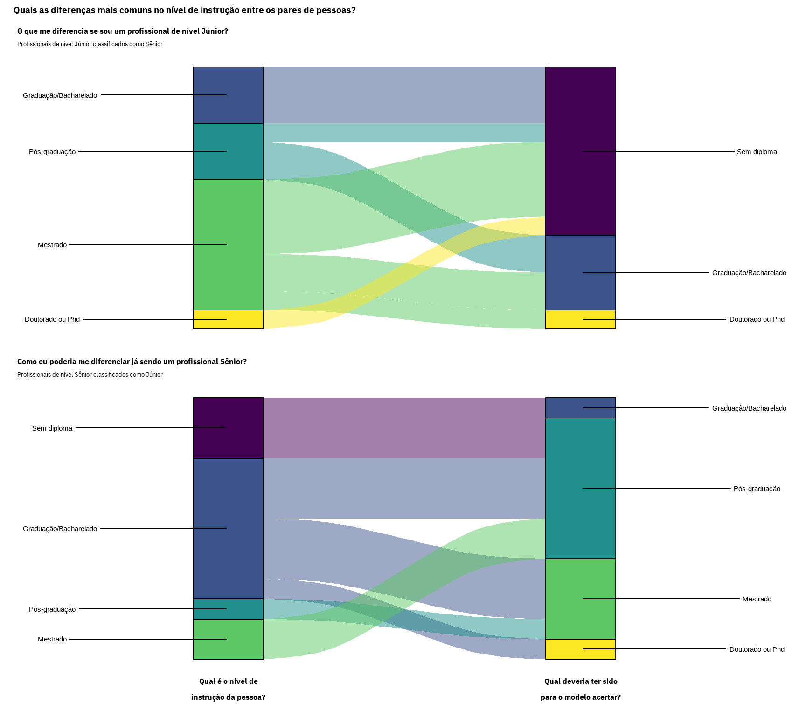

Essa pergunta vive circulando nas rodas de conversa das pessoas dentro da área de dados e, apesar de existir muito material sobre o assunto, ainda não conseguimos olhar para nenhum tipo de dado para responder à essa pergunta. Neste post vou usar os resultados da pesquisa State of Data Brasil 2021 para tentar preencher esse gap, aproveitando para trazer alguns insights sobre o que o mercado de trabalho brasileiro está praticando.
Este post foi a minha submissão para o Challenge do State of Data 2021, que me rendeu o prêmio de 3º lugar.
Por que essa pergunta é tão frequente?
É bem comum para quem está na área de dados participar de conversas sobre a diferença entre profissionais de nível Júnior, Pleno e Sênior. Existem diversos posts de blog, canais do YouTube e podcasts que falam sobre isso de forma bem detalhada e extensiva, e apontam para um consenso: a principal diferença entre aqueles profissionais está na forma de atuar, de realizar entregas, seu nível de conhecimento e/ou o impacto sobre o negócio.
Parece que este consenso é tão claro que existem até check-lists de atuação e matrizes de competência que tangibilizam o que é esperado das pessoas entre aqueles níveis. Entretanto, alguns dos itens existentes nestas ferramentas podem não generalizar tão bem quanto se espera quando consideramos uma área tão heterogênea como a de dados (e.g., diferenças no tipo de indústria, maturidade da empresa, os diferentes papéis existentes dentro de uma função e etc). Uma consequência disso é que apesar de termos uma boa noção do que faz a senioridade de uma pessoa na área de dados, é difícil saber quão aderente o mercado está às nossas expectativas.
Entender o quão bem alinhado está o que a comunidade espera de um profissional em determinado nível de carreira com o que de fato acontece no mercado é bastante importante. Um dos principais motivos para isso é que em um cenário no qual o mercado está tão aquecido, o nível de senioridade de um cargo passou a ser uma moeda de troca para reter ou atrair as pessoas profissionais de dados. Isto, por sua vez, pode gerar um desequilíbrio de expectativas, discursos e práticas que podem acabar prejudicando o desenvolvimento das próprias pessoas. Assim, parece ser um momento importante para buscar definir o perfil médio do profissional de dados por nível de senioridade no mercado brasileiro.
State of Data Brasil 2021: um retrato do mercado de trabalho de dados no Brasil
O Data Hackers e a Bain & Company promoveram uma pesquisa de outubro à dezembro de 2021 que teve como intuito mapear o mercado de trabalho de dados no Brasil. Cerca de 2.645 pessoas que estão se preparando ou que já atuam na área de dados como analistas, cientistas ou engenheiros de dados, bem como gestores, responderam um questionário online aberto com diversas perguntas relacionadas à demografia, qualificação, remuneração, senioridade, atuação e outros aspectos do trabalho na área. A tabela abaixo traz a lista de quase todas as perguntas feitas aos respondentes, bem como algumas das possíveis respostas à cada uma delas - ilustrando o detalhamento da pesquisa, além da diversidade de tópicos abordados.
Código
# carregando os pacotes necessários para a exploração dos dadoslibrary(tidyverse)# corelibrary(reactable)# tabelas interativaslibrary(ggridges)# ridge plotslibrary(scales)# escalas dos gráficoslibrary(vegan)# análise multivariadalibrary(patchwork)# compor figuraslibrary(gghighlight)# para o highlightlibrary(glue)# concatenar stringslibrary(tidymodels)# machine learninglibrary(tidytext)# arrumar os textoslibrary(ggalluvial)# alluvial plotlibrary(ggrepel)# repelir texto dos plots# carregando os dados da pesquisa State of Datadf<-read_csv(file ='data/raw/State of Data 2021 - Dataset - Pgina1.csv')# criando um dicionário para mapear o nome das colunas no estado atual para um nome# mais legível, bem como para conseguirmos mapear o texto dela às figuras depoisdicionario<-tibble(## pegando o nome das colunas do dataframe coluna =names(df))%>%## limpando o string com o nome das colunas - o padrão geral é "(Pergunta, texto)",## onde a Pergunta é codificada com base em três informações: Parte, Letra da Pergunta,## Letra da Opção escolhida. Isto é representado através do código: ## 'P<numero_parte>_<letra_da_pergunta>_<letra_opcao>'. A ideia aqui será quebrar cada## nome de coluna em parte, letra da pergunta, letra da opção e texto da pergunta, bem ## como mapear se aquela é uma pergunta principal (e.g., 'P<numero>' ou 'P<numero>_<letra>').## Para tal, vamos começar tratando o texto dos nomes das colunas que capturamos aqui e,## na sequência, vamos separarar a tupla com base num padrão de regexmutate(### removendo as aspas simples no nome das colunas: e.g., ('P0', 'id') -> (P0, id) informacao =str_replace_all(string =coluna, pattern ="'", replacement =''),### removendo os parenteses do nome das colunas: e.g., (P0, id) -> P0, id informacao =str_replace_all(string =informacao, pattern ='\\(|\\)', replacement =''),### ajustando a primeira coluna do dataframe, (P0, id) pois é a única delas que foge do### padrão "(Parte , texto)", onde Parte e texto estão separados por espaço-vírgula-espaço informacao =str_replace_all(string =informacao, pattern ='P0, id', replacement ='P0 , id'))%>%# colocando o identificador da pergunta daquele do texto de descrição da pergunta em colunas# diferentes com base no padrão de regex 'espaço-vírgula-espaço' que os separaseparate(col ='informacao', into =c('pergunta_id', 'texto'), sep =' , ')%>%# separando o código identificador da pergunta em parte, letra da pergunta e letra da opcaoseparate(col ='pergunta_id', into =c('parte', 'pergunta', 'opcao'), sep ='_', remove =FALSE)%>%# corrigindo typos e coisas similares no dicionario com o nome das colunas vindo dos próprios# dados ou da manipulaçãomutate(### adicionando uma coluna booleana indicando se cada uma das perguntas é uma pergunta### principal ou uma resposta à uma pergunta principal - a última é definida pelo padrão### de regex abaixo como estamos negando o teste, o TRUE marca as perguntas principais pergunta_principal =str_detect(string =coluna, pattern ='P[2-9]_[a-z]_', negate =TRUE),### as opções da pergunta P3_d acabaram ficando bugadas na tabela original, de forma que### as opções vieram dentro do texto de descrição da pergunta. Assim, precisamos resgatar### a letra das opções de dentro do texto, e colocar ela de volta no identificador dessa### pergunta quando for o caso opcao =case_when(pergunta_id=='P3_d_'~str_extract(string =texto, pattern ='^[a-k](?=\\s)'),TRUE~opcao), pergunta_id =case_when(pergunta_id=='P3_d_'~paste0(pergunta_id, opcao),TRUE~pergunta_id),### limpando o texto de descrição da pergunta para remover o typo do leakage da opção e ### whitespace que possa haver no texto texto =case_when(pergunta_id=='P3_d_'~str_remove(string =texto, pattern ='^[a-k]\\s'),TRUE~texto), texto =str_squish(string =texto))## colocando o dicionário de identificador das perguntas e opções em uma tabela para referência rápida dicionario%>%# adicionando o identificador único da parte-pergunta como uma coluna no dataframe, de forma a utilizarmos # essa informação mais à frente para mapear que parte-pergunta é múltipla escolha e a remapear o título# original da questão às opções da múltipla escolha. Todas as perguntas de múltipla escolha que vamos# considerar estão da Parte 2 em dia, e são marcadas pelo sufixo '_' após a letra da pergunta mutate( pergunta_parte_id =case_when(str_detect(string =pergunta_id, pattern ='P[2-9]_[a-z]_')~str_extract(string =pergunta_id, pattern ='P[2-9]_[a-z]'),TRUE~pergunta_id))%>%# agrupando o dataframe pelo identificador da parte-perguntagroup_by(pergunta_parte_id)%>%# identificando as parte-perguntas que são múltipla escolhas através da quantidade de vezes que este # identificador aparece - quando existem diversas opções associadas à uma parte-pergunta, ela deve# aparecer mais de uma vez; assim, se mapearmos as linhas associadas à partes-pergunta que aparecem# mais de uma vez, teremos acesso ao indicador que estamos buscandomutate( contem_opcao =n()>1)%>%# retendo todas as observações de partes-pergunta que não são de múltipla escolha (i.e., '!contem_opcao')# ou todas as observações de partes-pergunta que são de múltipla escolha, desde que não seja a primeira # linha da parte-pergunta (i.e., 'contem_opcao & row_number() > 1') - com este último passo estamos # removendo efetivamente a linha que contém o título da pergunta que dá acesso as opções, o que fará# com que a tabela a seguir não traga como opção o título da pergunta, somente as opções mesmofilter(!contem_opcao|contem_opcao&row_number()>1)%>%# desagrupando o dataframeungroup%>%# selecionando apenas as colunas que contém as informações que precisaremos para criar a tabelaselect(pergunta_parte_id, opcao, texto_pergunta_opcao =texto)%>%# juntando o dicionário para mapear a pergunta_parte_id ao seu texto - isso servirá para pegarmos# o titulo de cada pergunta apenasleft_join(y =select(dicionario, pergunta_id, texto), by =c('pergunta_parte_id'='pergunta_id'))%>%# colando o identificador da pergunta_parte com o texto dela - i.e., o texto da pergunta em simutate(texto =paste0('<b>', pergunta_parte_id, '</b><br>', texto))%>%# dropando a coluna que contém o identificador pergunta_parte_id, pois já temos essa informação# mapeada na coluna com o texto da perguntaselect(-pergunta_parte_id)%>%# criando a tabela de referencia com o reactablereactable( groupBy ='texto', columns =list( texto =colDef(name ='Pergunta', html =TRUE, width =300, maxWidth =300), opcao =colDef(name ='Opções', aggregate ='unique', width =100, maxWidth =100), texto_pergunta_opcao =colDef(name ='Respostas', width =200, maxWidth =200)), showPageSizeOptions =TRUE, defaultPageSize =10, borderless =TRUE, striped =TRUE, highlight =TRUE, compact =TRUE, style =list(fontSize ='14px'))
Esta pesquisa traz um retrato muito contemporâneo do mercado de trabalho do Brasil e abre as portas para usarmos os dados em favor da própria comunidade. Nesse sentido, há cerca de dois anos, um post no Medium do Data Hackers compilou as respostas de três pessoas para a pergunta ‘Qual a diferença entre um Cientista de Dados júnior, pleno e sênior?’. Todas as respostas passaram pelos mesmos temas, e reforçam que a senioridade está associada não só a atuação das pessoas em si, como também ao impacto que elas têm no negócio em que atuam. Contudo, os resultados da pesquisa State of Data Brasil 2021 nos permite revisitar essa mesma pergunta mas buscando a resposta sobre o que é praticado no mercado.
Meu intuito aqui será tentar definir o perfil médio da pessoa Cientista de Dados por nível de senioridade no mercado de trabalho brasileiro. Para isso, vou começar buscando entender um pouquinho melhor os dados que temos à mão e quão heterogênea pode ser a amostra de pessoas cientistas de dados que responderam à pesquisa. Na sequência, vou utilizar um modelo preditivo para identificar os fatores que mais contribuem para diferenciar os profissionais por nível de senioridade. nas informações sobre as atuações gerais e específicas que foram mapeadas, tais como os conhecimentos, tecnologias utilizadas e os tipos de problemas de dados enfrentados, bem como alguma coisa relacionada ao contexto de trabalho no qual as pessoas estão inseridas. Finalmente, farei uma análise do erro desse modelo para entender o que mais contribui para os desvios de nível de senioridade previstos por ele (e.g. qual o perfil do profissional Júnior que atua como Sênior ou vice-versa?). Vamos começar!
Código
# renomeando as colunas e implementando pequenos tratamentos aos dadosdf<-df%>%# substituindo a tupla mais complexa que está atualmente no nome das colunas pelo código# identificador de cada uma das perguntas a partir do dicionário de dados que criamos - # i.e., "(Pergunta, texto)" -> Perguntaset_names(nm =pull(dicionario, pergunta_id))%>%# corrigindo erros gerais na base de dadosmutate(# corrigindo grafia de Arquiteto de dados, que aparece das duas formas na base de dados P2_f =ifelse(test =P2_f=='Arquiteto de dados', yes ='Arquiteto de Dados', no =P2_f),# removendo o ponto final da coluna P4_a P4_a =str_remove(string =P4_a, pattern ='\\.'))%>%# removendo registros duplicados - existem 4 pessoas cujas respostas aparecem duas vezes# na base de dados - 1 Cientista de dados, 1 Dev, 1 Engenheiro de ML e 1 Tech Leaddistinct(P0, .keep_all =TRUE)
Importante
Existem pequenos tratamentos que precisamos fazer aos dados da pesquisa disponibilizados no Kaggle para corrigir algumas possíveis inconsistências que podem impactar a análise dos dados. Além disso, é importante estar atento à alguns detalhes importantes sobre a forma que as informações foram fornecidas: 1 - De acordo com as informações na coluna P0, existem quatro pessoas respondentes que parecem ter tido o seu registro duplicado na base de dados (e.g., 7lkav4o0fukny1644lc7lkav4o0c5wsb). Como as respostas para todas as perguntas são similares entre os registros para estes casos, resolvi manter uma única cópia das instâncias associadas à estes IDs; 2 - Existem alguns typos nos campos preenchidos para algumas respostas. Um exemplo disto é o cargo de Arquiteto de Dados, que aparece grafado de duas formas distintas; 3 - As perguntas com múltiplas opções já possuem suas respostas no formato de one-hot-encoding. No entanto, encontrei um ou outro caso no qual o procedimento parece não ter sido funcionado 100% bem (e.g., para a pessoa cujo P0 é 9oxi24d4ok01hkdst59oxi24d4xriqtr). Como foram poucas as observações nas quais isto ocorreu, não achei necessário um esforço maior para recriar os encodings a partir das colunas originais; 4 - É possível que algumas respostas contenham NA como resultado do processo de anonimização de dados. Neste contexto, optei por não aplicar nenhum tratamento aos dados para substituir tais valores e, quanto necessário, resolvi por simplesmente remover àquela instância com valores faltantes da análise.
O perfil dos Cientistas de Dados júnior, pleno e sênior é muito heterogêneo no mercado brasileiro
Profissionais com diferentes papéis e funções na área de dados responderam à pesquisa State of Data Brasil 2021: estatísticos, cientistas de dados, engenheiros de dados, professores, desenvolvedores de software, analistas de negócios e etc (conforme mapeado pelo pergunta P2_f). Contudo, esses papéis podem não dizer muito sobre o que a pessoa realmente faz no dia a dia e, assim, a pesquisa também mapeou o tipo de atuação que melhor retrata o cotidiano de cada pessoa. Um exemplo de atuação seria a de Ciência de Dados, onde a pessoa teria um dia a dia onde ela ‘desenha e executa experimentos com o objetivo de responder perguntas do negócio, e desenvolve modelos preditivos e algoritmos de Machine Learning com o objetivo de otimizar e automatizar a tomada de decisão’. É em cima desta amostra de respondentes que vamos conduzir nossas análises que, por sinal, foi a terceira atuação mais frequente na pesquisa conforme podemos observar na figura abaixo - cerca de 410 respondentes, dos 2.641 existentes após a remoção de IDs duplicados.
Código
# criando figura para descrever a quantidade de respondentes por tipo de atuaçãocount(df, P4_a)%>%# reordenando as atuações para que a figura fique com a barra em ordem decrescentemutate(P4_a =str_wrap(string =P4_a, width =10), P4_a =fct_reorder(.f =P4_a, .x =n, .desc =TRUE))%>%# criando a figuraggplot(mapping =aes(x =P4_a, y =n, fill =P4_a))+geom_col(color ='black', show.legend =FALSE)+geom_text(mapping =aes(label =paste0(round(x =(n/sum(n))*100, digits =2), '%')), stat ='identity', vjust =-1)+scale_y_continuous(expand =c(0, 0), limits =c(0, 950), breaks =seq(from =0, to =1000, by =100))+scale_fill_manual(values =c('grey15', 'grey30', 'grey45', 'grey65', 'grey80', 'grey95'))+labs( title ='Que tipo de atuação melhor caracteriza o seu dia a dia?', subtitle ='A Ciência de Dados é a terceira atuação mais frequente entre as pessoas respondentes da pesquisa', x ='Atuação no dia a dia', y ='Quantidade de respondentes')
Associada à atuação de cada pessoa temos também disponível através da pergunta P2_g o seu nível de senioridade. Com base nessa informação, podemos observar que cerca de 40.73% das pessoas cientistas de dados que responderam à pesquisa têm o nível de Pleno. O restante das pessoas respondentes parecem representar igualmente os níveis Júnior e Sênior, indicando que temos algum desbalanceamento na representatividade dos níveis de senioridade na amostra analisada. Isto é algo importante de ser considerado nas análises que faremos a seguir.
Código
df%>%# pegando apenas as observações das pessoas que responderam ter uma atuação que reflete # a de uma pessoa cientista de dadosfilter(P4_a=='Ciência de Dados')%>%# plotando a quantidade de respondentes por nivel de senioridadeggplot(mapping =aes(x =P2_g, fill =P2_g))+geom_bar(color ='black', show.legend =FALSE)+geom_text(mapping =aes(label =paste0(round(x =(..count../sum(..count..))*100, digits =2), '%')), stat ='count', vjust =-1)+scale_y_continuous(expand =c(0, 0), limits =c(0, 180), breaks =seq(from =0, to =180, by =30))+scale_fill_manual(values =cores_data_hackers)+labs( title ='Qual o nível de senioridade das pessoas Cientista de Dados?', subtitle ='40% dos respondentes têm o nível de senioridade Pleno, enquanto os outros 60% são divididos\npraticamente de forma igual entre os níveis de Júnior e Sênior', x ='Nível de senioridade', y ='Número de respondentes')
Como dito anteriormente, é consenso que diferenças na forma de atuar, no nível de conhecimento e no impacto sobre o negócio devem estar relacionadas ao nível de senioridade da pessoa cientista de dados. Todavia, é difícil mapear estas coisas em uma pesquisa tão grande e complexa quanto a State of Data: afinal, como poderíamos comparar de forma robusta, por exemplo, o quanto cada profissional está trazendo impacto para o negócio? Apesar de não conseguirmos ir tão a fundo nesse nível de detalhe, temos à nossa disposição uma série de indicadores que devem estar pelo menos indiretamente relacionados aqueles itens, mapeados na sequência de perguntas sobre atuações gerais da pessoa profissional de dados (i.e., perguntas de prefixo P4) e específicas das pessoas cientistas de dados (i.e., perguntas de prefixo P8).
Estas perguntas tentam explorar de forma bem detalhada cada uma das linguagens, fontes de dados, formas de atuação, tarefas e etc que cada uma das pessoas têm, mas é preciso considerar dois aspectos importantes quando formos utilizá-las. O primeiro é que estas perguntas falam muito mais sobre o que a pessoa faz ou usa, enquanto muito da discussão sobre o tema fala do como ela faz ou usa. Assim, é importante não perder de vista esta limitação das informações disponíveis. O outro aspecto importante é que algumas perguntas podem ser bastante redundantes, e não faria sentido considerar todas elas simultaneamente. Um exemplo disso está nas perguntas P4_b e P4_c: a primeira mapeia os tipos de fontes de dados que a pessoa já usou no trabalho, a segunda mapeia àquelas fontes que a pessoa utiliza a maior parte do tempo. Como o foco de nossas análises deve estar nos indicadores que falam sobre o momento atual de cada pessoa e como isso se relaciona ao seu nível de senioridade, decidi por utilizar apenas um subconjunto das atuações gerais e específicas disponíveis. Mais especificamente, foquei nas respostas para cada uma das perguntas abaixo1:
Pergunta
Descrição
P4_c
Entre as fontes de dados listadas, quais você utiliza na maior parte do tempo?
P4_d
Quais das linguagens listadas abaixo você utiliza no trabalho?
P4_f
Quais dos bancos de dados/fontes de dados listados abaixo você utiliza no trabalho?
P4_g
Quais das opções de Cloud listadas abaixo você utiliza no trabalho?
P4_h
Quais as ferramentas de Business Intelligence você utiliza no trabalho?
P8_a
Quais das opções abaixo fazem parte da sua rotina no trabalho atual com ciência de dados?
P8_b
Quais as técnicas e métodos listados abaixo você costuma utilizar no trabalho?
P8_c
Quais dessas tecnologias fazem parte do seu dia a dia como cientista de dados?
P8_d
Em qual das opções abaixo você gasta a maior parte do seu tempo no trabalho?
Com 9 perguntas forcem informações de de cerca de 129 atuações distintas, que vamos utilizar para caracterizar a atuação das pessoas cientistas de dados que responderam a pesquisa. Com isso, podemos seguir com a análise exploratória de dados, começando pela divisão dos dados em uma base de treino e outra de teste, trabalhando sobre a primeira de forma que nenhum insight que possamos tirar desta análise inicial possa contaminar o desenvolvimento do modelo preditivo que vamos ajustar depois. Uma vez que essa separação esteja feita, vamos olhar a base de treino para explorar os tipos de atuação mais frequentes entre as pessoas. Alguns padrões interessantes podem ser observados na figura abaixo:
Sem nenhuma surpresa, quase todas estas pessoas utilizam Python e/ou SQL em seu trabalho, enquanto um pouco mais de 30% delas disseram usar R;
Outro ponto interessante é que a utilização de técnicas de modelagem mais tradicionais (i.e., regressões) foram mais frequentes do que outros tipos de abordagem (e.g., redes neurais e modelos baseados em árvore), enquanto ambas foram muito mais frequentes do que a utilização de ferramentas de AutoML;
Na mesma linha do item anterior, parece que a maior parte das pessoas atuam muito mais com o ajuste de modelos aos dados do que na coleta e limpeza dos mesmos;
A tarefa de desenvolvimento dos modelos preditivos parece ser muito mais frequente do que a de colocá-los de fato em produção;
Algumas atuações simplesmente não se aplicam ou são exceções para a amostra de cientistas de dados analisadas aqui. Um exemplo disso é a utilização de ferramentas de BI como Mode e a utilização de Áudios como fonte de dados; e,
Poucas skills são muito frequentes, e parecem compor um core básico do que é necessário saber e/ou fazer para atuar como cientista de dados. Por outro lado, muitas skills parecem preencher nichos de atuação específicos, sendo compartilhadas por poucas pessoas.
Código
# criando um dataframe que contem a matriz de atuação de cada pessoa respondente que diz # atuar como Cientista de Dados e o nivel de senioridade associada à cada uma delasdf_atuacao<-df%>%# pegando apenas as observações das pessoas que responderam ter uma atuação que reflete # a de uma pessoa cientista de dadosfilter(P4_a=='Ciência de Dados')%>%# pegando a coluna com o identificador do respondente e o seu nível de senioridade, bem# como todas as colunas que contém as respostas sobre as atuações gerais e específicas # dos respondentes cuja atuação no dia a dia foi o de Ciência de Dadosselect(P0, P2_g, matches('P4_[cdfgh]_'), matches('P8_[abcd]_'))%>%# dropando observações que possuem valores faltantes - isso ocorre devido ao mascaramento# de dadosdrop_na()# fazendo um shuffle na base antes de separar os dados de treino e de teste, para tentar quebrar # qualquer tipo de estrutura que possa haver na base de dadosset.seed(42)df_atuacao<-slice_sample(.data =df_atuacao, prop =1, replace =FALSE)# fazendo o split da base analiticaset.seed(33)df_atuacao<-initial_split(data =df_atuacao, prop =0.8, strata =P2_g)%>%training()# criando a figura para mostrar a distribuição da frequência com a qual as atuações apareceram# entre os respondentesselect(df_atuacao, -c(P0, P2_g))%>%# como os respondentes estão na linhas e as perguntas nas colunas, o somatório das colunas # nos trará a quantidade de respondentes que disseram ter aquele tipo de atuaçãocolSums%>%# colocando o vetor resultante em ordem decrescente, de forma a conseguimos rankeá-lo mais# racilmente depoissort(decreasing =TRUE)%>%# passando o vetor para um tibble, onde teremos uma coluna com o identificador da pergunta # e a outra coluna com a quantidade de pessoas respondentes que disseram ter aquele tipo de# atuaçãoenframe(name ='pergunta_id', value ='n_respondentes')%>%# removendo todas as atuações que não tiveram nenhum respondentefilter(n_respondentes>0)%>%# mapeando o identificador único de cada pergunta ao seu respectivo texto, de forma a usar # essa informação mais tarde na figuraleft_join(y =dicionario, by ='pergunta_id')%>%# enriquecendo a base de com informações para plotarmosmutate(# calculando a proporção total dos respondentes que disseram ter cada uma das atuações proporcao =n_respondentes/nrow(df_atuacao), sequencia =1:n(), to_highlight =sequencia%in%c(1, 3, 5, 6, 8, 16, 27, 59, 66, 122, 123), texto =str_trunc(string =texto, width =54), texto =str_wrap(texto, width =30))%>%ggplot(mapping =aes(x =sequencia, y =proporcao))+geom_point(size =3, shape =21, color ='black', fill ='grey50')+gghighlight(to_highlight, label_key =texto, label_params =list(force_pull =-0.005, label.size =NA, fill =NA, seed =666, vjust =0.6, min.segment.length =0.3), unhighlighted_params =list(shape =16, size =1, color ='black'))+scale_x_continuous(breaks =c(1, seq(from =20, to =150, by =20)))+scale_y_continuous(labels =label_percent(), breaks =seq(from =0, to =1, by =0.1), limits =c(0, 1))+labs( title ='Quais as atuações mais frequentes entre os respondentes?', subtitle ='A maior parte das atuações é pouco frequente entre os respondentes da pesquisa', x ='Rank de frequência', y ='Porcentagem de pessoas respondentes')
A visão acima nos conta sobre a identidade das atuações mais frequentes, mas não fala nada sobre a forma como elas estão relacionadas ao nível de senioridade das pessoas. Assim, um primeiro entendimento que podemos buscar é se existe e como se dá a variação na quantidade total de atuações (i.e., atuações gerais + específicas) que cada pessoa respondente disse ter de acordo com o seu nível de senioridade. O resultado dessa análise mostra que existe uma grande variabilidade dentro de cada nível de senioridade na quantidade de atuações, e parece que as pessoas de nível Júnior tendem a ter menos atuações do que àquelas em nível de Pleno ou Sênior. Este padrão não é de todo inesperado, mas é curioso ver que as diferenças entre os níveis de senioridade não foram assim tão claras (e.g., note que existem pessoas de nível Sênior que têm pouquíssimas atuações).
Código
# criando a figura para mostrar a distribuição da quantidade de atuações distintas dos # respondentes por nivel de senioridadeselect(df_atuacao, -c(P0, P2_g))%>%# como os respondentes estão na linhas e as perguntas nas colunas, o somatório das # linhas nos trará a quantidade total de atuações distintas que cada um dos # respondentes assinalourowSums%>%# colocando o resultado da operação em um tibble, para facilitar a tarefa de plotagemenframe(value ='n_atuacoes')%>%# adicionando o indicador de senioridade - como os resultados estao na mesma ordem dos# respondentes, basta copiar a informação do dataframe original para cámutate(P2_g =df_atuacao$P2_g)%>%# criando a figura per seggplot(mapping =aes(x =n_atuacoes, y =P2_g, fill =P2_g))+geom_density_ridges2(quantile_lines =TRUE, quantiles =2, vline_color ='grey90', scale =0.9, show.legend =FALSE)+scale_fill_manual(values =cores_data_hackers)+scale_y_discrete(expand =c(0, 0))+scale_x_continuous(breaks =seq(from =0, to =100, by =10))+labs( title ='Quantas atuações os respondentes têm por nível de senioridade?', subtitle ='Parece existir uma diferença na quantidade de atuações de acordo com a senioridade da pessoa,\nmuito embora exista uma grande variabilidade dentro de um mesmo nível de senioridade', x ='Quantidade de atuações do respondente', y ='Senioridade do respondente')
As informações apresentadas nas duas figuras acima podem ser combinadas em uma matriz de calor para buscarmos entender como cada uma das atuações estão associadas às pessoas de acordo com seu nível de senioridade e dependendo de quantas atuações elas disseram ter. Neste caso, as colunas desta matriz representam cada uma das 129 atuações que estamos analisando, ordenadas da esquerda para a direta da atuação mais comum para a mais incomum - i.e., Python está mais à esquerda, áudios mais à direta. Já as linhas desta matriz representam cada uma das pessoas respondentes, ordenadas de cima para baixo daquelas que têm a maior quantidade de atuações para àquelas com a menor quantidade. Finalmente, o preenchimento das linhas indica que àquela combinação de pessoa-atuação existe, e a cor do preenchimento está mapeada ao nível de senioridade da pessoa (utilizando o mesmo esquema de cores que temos usado até aqui). Podemos tirar três insights importantes dessa matriz:
O primeiro insight está relacionado ao grau de aninhamento das atuações entre as pessoas - isto é, o quanto as atuações das pessoas que disseram ter a menor quantidade delas é um subconjunto daquelas que têm a maior quantidade. Se este aninhamento existisse, poderíamos esperar que o preenchimento da matriz se concentrasse totalmente na diagonal superior, o que claramente não é o caso. Logo, quais atuações as pessoas têm não parece estar relacionado à quantas atuações elas têm;
Outro ponto importante é que se aquele aninhamento fosse dependente do nível de senioridade das pessoas, esperaríamos ver a parte superior desta diagonal preenchida com a cor mais escura (i.e., representando as pessoas de nível Sênior) e a parte inferior preenchida com a mais clara (i.e., representando as pessoas de nível Júnior). Isto sugeriria que a atuação das pessoas Júnior são um subconjunto daquele das pessoas Sênior o que, mais uma vez, parece não ser o caso; e,
Esta matriz revela que existe uma grande substituição (i.e., turnover) das atuações entre as pessoas respondentes. Isto sugere que deve existir uma grande heterogeneidade na atuação entre as pessoas cientistas de dados que responderam a pesquisa State of Data Brasil 2021.
Código
# criando uma matriz para visualizar a variação na marcaçãodf_atuacao%>%# passando as informações sobre a atuação do formato largo para o formato longo - i.e., cada# uma das atuações para cada pessoa respondente passa a estar nas linhas ao invés de nas colunaspivot_longer(cols =-c(P0, P2_g), names_to ='atuacao', values_to ='flag')%>%# agrupando o dataframe pelo nivel de atuacao da pessoa respondentegroup_by(atuacao)%>%# somando a quantidade total de pessoas respondentes que disseram ter cada uma das atuações# isso acabará replicando esse total para cada uma das atuações, mas o intuito é esse mesmo# pois usaremos essa informação mais abaixo para ordenar as atuações daquela com maior número# de respondentes para a com o menor númeromutate( total_atuacao =sum(flag))%>%# regrupando o dataframe pelo identificador de cada pessoa respondentegroup_by(P0)%>%# somando a quantidade total de atuação que cada pessoa respondente disser ter. Isso também# acabará replicando esse total entre todas as linhas de um dado respondente mas, novamente, # usaremos essa informação mais abaixo para ordenar as pessoas respondentes daquelas com o# maior número de atuações para a com o menor númeromutate( total_respondente =sum(flag))%>%# quebrando a estrutura de grupos do dataframeungroup%>%# preparando os dados para criar a matriz de respondentes por atuaçãomutate(# definindo a ordem dos respondentes de acordo com a quantidade total de atuações que cada# uma dessas pessoas marcou P0 =fct_reorder(.f =P0, .x =total_respondente),# definindo a ordem das atuações de acordo com a quantidade total de pessoas respondentes# que disseram ter aquele tipo de atuação atuacao =fct_reorder(.f =atuacao, .x =total_atuacao, .desc =TRUE),# codificando uma coluna para carregar o mapa de cores do preenchimento da matriz de acordo# com o nível de senioridade da pessoa respondente fill_col =ifelse(test =flag==1, yes =P2_g, no ='Vazio'))%>%# criando a figura per seggplot(mapping =aes(x =atuacao, y =P0, fill =fill_col))+geom_tile(show.legend =FALSE)+scale_fill_manual(values =c(cores_data_hackers, 'white'))+labs( title ='De que forma a atuação variou entre os respondentes?', subtitle ='Existe uma grande heterogeneidade nas atuações que cada respondente têm, que não parece estar\nassociada ao seu nível de senioridade ou à quantidade de atuações que as pessoas têm', caption ='As linhas da matriz estão ordenadas de cima para baixo, do respondente com maior número de atuações para aquele\nde menor. De forma similar, a ordenação da matriz da esquerda para a direita representa àquelas atuações que foram\nselecionadas por quase todos os respondentes para àquelas que foram pouquíssimo selecionadas. As cores representam\nos respondentes nos três níveis de atuação, seguindo a mesma paleta utilizada anteriormente.', x ='Atuação', y ='Pessoa respondente')+theme( axis.text =element_blank(), axis.line =element_blank())
Uma forma mais direta de testar o quão heterogênea é a atuação dos cientistas de dados dentro e entre os níveis de senioridade é através de uma Análise de Dispersão Multivariada de Grupos (i.e., PERMDISP: Permutational Multivariate Analysis of Group Dispersions). Esta análise é o análogo multivariado do teste de Levene para homogeneidade de variâncias, e testa a hipótese nula de que a distância entre o centróide de cada grupo e as instâncias associadas à ele é homogênea entre os grupos. Posto de outra forma, e simplificando, esta análise determina se a diversidade de atuações dentro de cada nível de senioridade é similar entre os níveis e, caso negativo, em qual deles as atuações são mais diferentes entre as pessoas. Para essa finalidade, utilizei a distância de Jaccard para quantificar a dissimilaridade de atuações entre as pessoas, uma vez que todas estão atuações são indicadores binários (i.e., presença ou ausência) e àquela métrica de distância normalmente tem um bom ajuste a este tipo de dado2. O output da análise pode ser visualizado através do biplot de uma ACoP (i.e., Análise de Coordenadas Principais) onde podemos projetar cada uma das instâncias, os centróides de cada grupo (i.e., nível de senioridade) e o polígono convexo que contém todas as instâncias de cada um deles: se existir uma diferença entre os níveis de senioridade, então o polígono convexo de pelo menos um deles deve ter um tamanho diferente dos demais (i.e., tamanho do polígono = heterogeneidade do grupo).
Os resultados dessa análise sugerem que as pessoas de nível Júnior que responderam à pesquisa têm uma diversidade de atuações maior do que àquelas de nível Pleno e Sênior (i.e., baseado no p-valor da análise), mas sem diferença entre estes dois últimos3. Contudo, se explorarmos o tamanho do efeito (i.e., a distância média para o centróide de cada grupo)4 e o tamanho dos polígonos convexos de cada grupo, podemos ver que esta diferença não é tão significativa assim. Existe outro insight importante que podemos tirar através da análise do biplot em si: se existirem diferenças nas atuações entre os níveis de senioridade, então os centróides de cada grupo devem estar distantes uns dos outros. Nesse sentido, podemos observar que as atuações das pessoas de nível Júnior parecem diferir daquelas das pessoas de nível Pleno e Sênior mas, novamente, não foi clara a diferença entre estes dois últimos.
Código
# calculando a dissimilaridade de atuação entre todos os respondentes da pesquisa, utilizando# a dissimilaridade de Jaccardmatriz_distancia<-vegdist(x =select(df_atuacao, -c(P0, P2_g)), method ='jaccard')# implementando uma análise de dispersão do modo de atuação de acordo com a senioridade da# pessoa respondenteset.seed(33)analise_dispersao<-betadisper(d =matriz_distancia, group =df_atuacao$P2_g, type ='centroid')# pegando o resultados do teste de permutaçãoset.seed(42)permutacao<-permutest(x =analise_dispersao, pairwise =TRUE)ndf<-permutacao$tab$Df[1]ddf<-permutacao$tab$Df[2]Fval<-round(x =permutacao$tab$F[1], digits =2)pval<-round(x =permutacao$tab$`Pr(>F)`[1], digits =4)# criando uma figura para visualizar a dispersão da forma de atuação dos respondentes de# acordo com o seu grau de senioridade## extraindo os escores da posição dos respondentes na ordenação da PCoAescores_respondentes<-scores(x =analise_dispersao, display ='sites')%>%# parseando a matriz de escores para um dataframe, uma vez que a classe de objeto # resultante não interage bem com o tidyversedata.frame%>%# colocando a senioridade do respondente como uma coluna no dataframe - usaremos essa# informação para mapear as cores dos pontos à senioridade do respondente; além disso,# como o input e o output da função estão alinhados, basta pegar a coluna de senioridade# do input e copiar ela para dentro deste outputmutate(P2_g =df_atuacao$P2_g)# levantando os dados necessários para desenhar o convex hull ao redor de cada nivel de# senioridade no gráfico de dispersãopoligonos_senioridade<-escores_respondentes%>%# agrupando o dataframe pelo nivel de senioridade, de forma a obtermos o convex hull para# cada nivel de senioridadegroup_by(P2_g)%>%# pegando as instância que podem ser usadas para desenhar o convex hull do nível de senioridadeslice(chull(PCoA1, PCoA2))# extraindo as coordenadas da posição dos centroides relacionados à cada um dos níveis# de senioridadeposicao_centroides<-scores(x =analise_dispersao, display ='centroids')%>%# parseando a matriz de escores para um dataframe, uma vez que a classe de objeto # resultante não interage bem com o tidyversedata.frame%>%# adicionando o string com a senioridade ao dataframe - essa informação está como# rowname do dataframerownames_to_column(var ='P2_g')# criando a figura per seggplot(data =escores_respondentes, mapping =aes(x =PCoA1, y =PCoA2, shape =P2_g, fill =P2_g))+geom_hline(yintercept =0, color ='grey80')+geom_vline(xintercept =0, color ='grey80')+geom_polygon(data =poligonos_senioridade, alpha =0.05, color =NA)+geom_point(size =2, alpha =0.3, color ='white')+# adicionando o centroide da distribuição da dispersão dos respondentes na figura, que# ficará marcando com uma estrelageom_point( data =posicao_centroides, mapping =aes(x =PCoA1, y =PCoA2, fill =P2_g, shape =P2_g), size =4, color ='black')+# adicionando o texto associando o centróide de cada grupo de respondentes à sua senioridadegeom_text( data =posicao_centroides, mapping =aes(x =PCoA1, y =PCoA2, label =P2_g, color =P2_g), size =3, hjust =1.4, fontface ='bold')+scale_shape_manual(values =c(21, 22, 24))+scale_color_manual(values =cores_data_hackers)+scale_fill_manual(values =cores_data_hackers)+labs( title ='Quão diferente é a atuação dos Cientistas de Dados?', subtitle ='A atuação das pessoas é heterogênea dentro e entre os níveis de senioridade', caption =glue('Análise de Dispersão Multivariada de Grupos: ndf = {ndf}; ddf = {ddf}; Pseudo-F = {Fval}; p = {pval}.'), x ='PCoA #1', y ='PCoA #2')+theme( legend.position ='none', axis.line =element_blank(), plot.title =element_text(size =10), plot.subtitle =element_text(size =8), plot.caption =element_text(size =6), axis.title.x =element_text(size =8), axis.title.y =element_text(size =8), axis.text =element_text(size =8))
Esta breve análise exploratória nos traz duas mensagens principais. A primeira delas é que parece ser mais fácil diferenciar um profissional Júnior de um Sênior do que um Sênior de um Pleno. A outra mensagem é que a heterogeneidade nas atuações dentro dos níveis de senioridade é tão grande que parece ser comum que uma pessoa de nível Júnior em um contexto pudesse ser a Sênior em outro, e vice-versa. Acredito que nenhuma dessas mensagens seja inédita ou surpreendente para quem está atuando na área, mas é interessante ver elas representadas através dos dados. De toda forma, isto reforça a necessidade de tentarmos definir de que forma o mercado se orienta para definir o perfil de atuação das pessoas cientistas de dados entre os níveis de senioridade.
O que mais diferencia os profissionais entre os níveis de senioridade no mercado de trabalho brasileiro?
Vou tentar responder à essa pergunta fazendo o feijão com arroz que nós, cientistas de dados, estamos acostumados: usando um algoritmo de aprendizado de máquina para tentar prever o nível de senioridade das pessoas que responderam a pesquisa State of Data 2021. Mais especificamente, vamos analisar o peso que o modelo dará à cada uma das atuações gerais e específicas, bem como ao contexto de trabalho no qual as pessoas estão inseridas, para predizer o senível de senioridade. No entanto, antes de seguir, acredito que seja importante ter duas considerações em mente. Uma delas é que construiremos esse modelo utilizando apenas uma amostra dos cientistas de dados que atuam no mercado brasileiro - i.e., aqueles que responderam a pesquisa - e, portanto, não temos como saber o quanto ele pode generalizar de fato para o mercado como um todo. A segunda é que não devemos tomar uma relação entre e.g. uma atuação e um nível de senioridade como boa ou ruim…na realidade, essas relações só nos dirão que dentro da amostra de pessoas que responderam a pesquisa é mais frequente vermos aquele nível de senioridade associado (ou não) àquela atuação, e é isso.
Com isso em mente, vamos organizar a base que utilizaremos para o ajuste do modelo preditivo, além de derivar algumas informações à partir de outras já existentes. Note que não devemos incluir nenhuma informação que seja consequência do nível de senioridade (e.g., salário e tempo de atuação), além de eu ter optado por não considerar informações demográficas sobre a pessoa (e.g., idade, gênero, UF onde mora) pois eu realmente acredito que estas não devem e não podem ser alavancas para definir a senioridade de uma pessoa. Em suma, vamos incluir 6 informações adicionais além daquelas 129 atuações que já estamos analisando, de acordo com as seguintes hipóteses associadas:
Pode ser que as empresas tenham diferentes graus de maturidade para entender o que é um cientista de dados e/ou alinhar o cargo à sua atuação per se (e.g., a pessoa atua com desenvolvimento de front-end, mas tem o cargo de cientista de dados). Assim, substituí a variável que informa o cargo da pessoa (i.e., pergunta P2_f) por uma indicador se ela tem ou não o cargo de Cientista de Dados. Com isso, poderemos avaliar de forma bem simples se é mais provável que pessoas que tenham esse cargo estejam mais frequentemente associadas a um nível de senioridade específico;
É possível que a definição do nível de senioridade varie entre os tipos de indústria, de forma que o que é Sênior em uma indústria pode ser o Júnior em outra. Assim, resolvi criar uma variável com base na pergunta P2_b, codificando o tipo de indústria no qual a pessoa atua: indeterminado se a resposta à pergunta é NA ou foi ‘Outro’, setor de indústria se a sua resposta foi uma entre agronegócios, construção, energia, indústria, setor alimentício ou setor automotivo ou, caso nenhuma das anteriores, setor de serviços (e.g., consultoria, entretenimento, bancos,…);
Já escutei algumas discussões de que o Sênior em uma start-up pode ser bem diferente daquele de uma big tech. Para representar essa ideia, optei por recodificar a informação da pergunta P2_c que fala sobre a quantidade de funcionários que a empresa da pessoa têm usando os critérios do IBGE: microempresa, pequeno porte, médio porte e grande porte (além de desconhecido quando esta informação estava faltando). Existem critérios distintos para o setor da indústria e o de comércio e serviços, mas como a grande maioria das pessoas que responderam à pesquisa atua no último, resolvi utilizá-lo como base;
Está bem claro à essa altura que você não precisa ter um diploma acadêmico ou um doutorado para atuar na área de ciência de dados. No entanto, também é consenso de que uma qualificação de nível superior pode ajudar bastante não só na empregabilidade como também na forma como você acaba pensando e abordando os problemas de dados. Desta forma, pode ser o caso que pessoas com um grau de qualificação maior acabem atuando de forma diferenciada e isso, por sua vez, facilite a sua escalada de carreira (e.g., fazendo entregas acima da média)5. Tendo isso em vista, aproveitei quase que totalmente as respostas à pergunta P1_h, só recodificando os casos em que assumi que poderia dizer que a pessoa não tem um diploma (i.e., estudantes de graduação, quem não tem uma graduação formal e quem optou por não responder); e,
Vimos que parece existir uma variação natural na quantidade de atuações que as pessoas disseram ter, e que isso pode estar relacionado ao seu nível de senioridade. Apesar dessa informação não ser uma alavanca muito acionável, acredito que seja importante considerar uma variável que quantifique o total de atuações gerais e outra o total de atuações específicas de cada pessoa. Eu espero que elas acabem sendo colineares mas, através delas, podemos avaliar se e.g. o importante para o profissional Júnior é ter muito das atuações gerais e, ao progredir para os próximos níveis, ter cada vez mais atuações específicas. Dada essa possibilidade (e curiosidade), achei melhor manter essas variáveis na análise.
Código
# criando a base analítica a partir da base de dados original da pesquisa, seguindo # a lógica de feature engineering explicada no textodf_base_analitica<-df%>%# pegando apenas as observações das pessoas que responderam ter uma atuação que # reflete a de uma pessoa cientista de dadosfilter(P4_a=='Ciência de Dados')%>%# codificando features a partir dos dados disponíveis na base de dados originalmutate(# adicionando um indicador para mapear se a pessoa respondente possui o título # de cientista de dados no cargo ou não has_role =case_when(str_detect(string =P2_f, pattern ='Cientista de Dados')~1L,TRUE~0L),# agrupando o setor de atuação dos respondentes em torno de três categorias # mais simples - Indústria, Comércio e Serviços (i.e., só Serviços) e Indeterminada tipo_industria =case_when(str_detect(string =P2_b, pattern ='Agronegócios|Construção|Energia|Indústria|Alimentício|Automotivo')~'Indústria',is.na(P2_b)|P2_b=='Outro'~'Indeterminado',TRUE~'Serviços'),# mapeando o tamanho da empresa da pessoa respondente às categorias definidas pelo# IBGE de acordo com o número de colaboradores - simplificando e utilizando a categoria# 'Comércio e Serviços', dado que a maior parte dos respondentes de Ciência de Dados# está nessa área tamanho_empresa =case_when(is.na(P2_c)~'Desconhecido',P2_c%in%c('de 1 a 5', 'de 6 a 10')~'Microempresa',P2_c%in%c('de 11 a 50')~'Pequeno porte',P2_c%in%c('de 51 a 100')~'Médio porte',TRUE~'Grande porte'),# juntando tudo o que é grau de formação onde a pessoa ainda não tem um diploma de # ensino superior (ou preferiu) não informar em uma categoria só instrucao =case_when(P1_h%in%c('Estudante de Graduação', 'Não tenho graduação formal', 'Prefiro não informar')~'Sem diploma',TRUE~P1_h))%>%# pegando apenas as colunas que têm as informações que utilizaremos para a modelagemselect(P0, P2_g, has_role, tamanho_empresa, instrucao, tipo_industria, matches('P4_[cdfgh]_'), matches('P8_[abcd]_'))%>%# passando todas as colunas que estão como double para integermutate(across(where(is.double), as.integer))%>%# dropando qualquer linha com NAdrop_na()%>%# agrupando o tibble linha a linharowwise()%>%# calculando a quantidade de respostas gerais e especificas de cada pessoa respondentemutate( respostas_geral =sum(c_across(contains('P4'))), respostas_especificas =sum(c_across(contains('P8'))))%>%# quebrando o agrupamento das linhasungroup
O próximo passo será estabelecer o fluxo de ajuste do modelo aos dados. Primeiro, vou usar as mesmas instâncias da análise exploratória de dados para estabelecer a base de treino (326 pessoas respondentes), e deixarei o restante delas na base de teste (83 pessoas; precisei remover 1 delas da base de dados pois ela tinha todas as informações sobre a atuação como NA). Também vou preparar um esquema de validação cruzada com 5 divisões, de forma a avaliarmos a performance média do modelo entre elas durante o seu treinamento. Na sequência, vou preparar um pipeline de pré-processamento dos dados onde vamos: (a) fazer o one-hot-encoding de todas as variáveis categóricas que criamos, (b) adicionar interações entre o tamanho da empresa e o tipo de indústria6, e de cada uma destas com o fato da pessoa possuir ou não o cargo de cientista de dados7, (c) removeremos então qualquer variável preditora que tenha pelo menos 97% de seus valores iguais (i.e., quase tudo 0 ou 1 - efetivamente, estamos removendo àquelas atuações que menos de 12 pessoas disseram ter) e, finalmente, (d) vamos padronizar as duas variáveis quantitativas que incluímos no modelo (i.e., quantidade total de atuações gerais e de atuações específicas).
Código
# fazendo o split da base analitica usando a mesma divisão da base em treino e teste do que aquela# utilizada na análise exploratória de dados - para isso, usaremos o make_splits, que levará como# argumentos os índices das instâncias que estavam na base de treino utilizada na EDA para criar # o split de dados baseados nas mesmas instâncias, garantindo que não há leakage da EDA para a # modelagemsplit_dos_dados<-make_splits( x =list( analysis =which(df_base_analitica$P0%in%df_atuacao$P0), assessment =which(!df_base_analitica$P0%in%df_atuacao$P0)), data =df_base_analitica)# criando folds para validacao cruzadaset.seed(42)skfolds<-vfold_cv(data =training(split_dos_dados), v =5, strata =P2_g)# criando a receita de preprocessamento dos dados## criando uma receita através da qual vamos modelar a senioridade da pessoa respondente com base em## todas as informações disponíveis na base analítica - usando o split de treino para criar a receita## de pre-processamento (e que só será treinada de fato quando rodarmos cada um dos modelos)pre_processamento<-recipe(P2_g~., data =training(split_dos_dados))%>%# parseando a coluna P0 como o identificador único de cada pessoa respondenteupdate_role(P0, new_role ='id')%>%# fazendo o one hot encoding das variáveis categóricas com mais de um nível step_dummy(tamanho_empresa, instrucao, tipo_industria, one_hot =TRUE)%>%# adicionando uma interação entre o tamanho da empresa e o tipo de industria, de forma a testar a # hipotese que o nivel de senioridade exigido difere de acordo com o tipo de ramo no qual a empresa# da pessoa respondente atuastep_interact(terms =~starts_with('tamanho_empresa'):starts_with('tipo_industria'))%>%step_interact(terms =~starts_with('tamanho_empresa'):has_role)%>%step_interact(terms =~starts_with('tipo_industria'):has_role)%>%# removendo todas as variáveis preditoras que têm a variância muito baixa - i.e., são todas variáveis# categóricas com um viés grande demais para uma das respostas (e.g. ou quase tudo 1 ou quase tudo 0)step_nzv(all_predictors(), freq_cut =97/3)%>%# normalizando todas as variáveis preditoras que, embora sejam categóricas, faz com que possamos # comparar o impacto de cada uma delas considerando a frequência com a qual ocorremstep_normalize(respostas_geral, respostas_especificas)
Uma vez que tenhamos feito todo o trabalho de preparação dos dados, vamos agora à etapa de seleção do algoritmo. Optei por utilizar uma regressão multinomial com regularização L1 e L2 para resolver o problema de previsão do nível de senioridade da pessoa cientista de dados, por três principais motivos: é um algoritmo bastante simples, a regularização ajudará a lidar com a grande quantidade de variáveis preditoras e, o mais importante, temos acesso à explicabilidade de suas decisões através dos betas da regressão - que, nesse caso, representam o logarítimo da razão de probabilidade do impacto de cada variável preditora sobre o nível predito (i.e., quão mais provável é que uma pessoa que tenha àquela atuação ou característica esteja associada aquele nível de senioridade do que uma outra pessoa que não os tenha). Definido o algoritmo, vou juntá-lo ao pipeline de pré-processamento de dados para que todas àquelas etapas ocorram na sequência correta dentro de cada fold da validação cruzada durante o treinamento desse algoritmo.
Código
# criando uma instância do modelo de regressão multinomial usando a engine do glmnet e deixando os dois# hiperparametros principais para a otimização bayesiana - equivalente ao C e ao l1_ratio do sklearnregressao_multinomial<-multinom_reg(penalty =tune(), mixture =tune())%>%set_engine(engine ='glmnet', standardize =FALSE)%>%set_mode(mode ='classification')# criando workflow para a regressão multinomial - seria a mesma coisa que criar uma instância do pipeline# do sklearn, empacotando o pre-processamento e o algoritmo em um objeto sópipeline<-workflow()%>%add_recipe(recipe =pre_processamento)%>%add_model(spec =regressao_multinomial)
Uma vez que este pipeline esteja consolidado, realizaremos uma otimização dos hiperparâmetros da regressão multinomial - os valores que definem a intensidade da regularização L2 (penalty) e L1 (mixture) - utilizando uma busca bayesiana. Utilizaremos essa buscar para tentar encontrar a combinação daqueles dois hiperparâmetros que forneça o modelo cujas probabilidades preditas estejam o mais bem calibradas com o nível de senioridade observado (i.e., que a probabilidade seja 1 para o nível de senioridade que a pessoa de fato tem e 0 para aqueles que não é o dela). Para isso, vou focar em otimizar a entropia cruzada do modelo (log loss), de forma a obter o modelo que nos forneça o menor valor para esta métrica; além disso, vou aproveitar para monitorar os valores de AUC de cada modelo ajustado durante esse processo. Uma característica interessante da busca bayesiana é que ela explora o espaço de hiperparâmetros de forma à selecionar àquelas combinações que têm maior expectativa de gerar um bom resultado, de acordo o histórico de exploração de cada iteração anterior. Com isso, aumentamos as chances de encontrar um bom modelo de forma mais rápida do que se explorássemos todo o espaço e.g. de forma aleatória. Finalmente, uma vez que tenhamos descoberto os valores daqueles hiperparâmetros usando a validação cruzada, vamos empregá-los para treinar o modelo mais uma vez usando todos os dados da base de treino e realizar a sua avaliação final na base de teste.
Código
# implementando uma otimização bayesiana de hiperparâmetros para a regressão multinomial - usando o log# loss como métrica principal e monitorando o AUC. Este processo será paralelizado para ganharmos um # pouco mais de velocidadedoParallel::registerDoParallel()set.seed(42)grid_search<-pipeline%>%tune_bayes( resamples =skfolds, iter =50, metrics =metric_set(mn_log_loss, roc_auc), initial =15, control =control_bayes(no_improve =10, seed =42, verbose =TRUE, parallel_over ='resamples'))# extraindo a melhor combinação de hiperparâmetros do estimador a partir do grid search e finalizando o # pipeline com esta combinação melhor_estimador<-pipeline%>%finalize_workflow(parameters =select_best(x =grid_search, metric ='mn_log_loss'))# treinando o melhor estimador na base de treino e escorando ele na base de testemodelo_treinado<-melhor_estimador%>%last_fit(split =split_dos_dados, metrics =metric_set(mn_log_loss, roc_auc))# extraindo o valor das métricas de avaliação do modelo definidas acimametricas_no_teste<-modelo_treinado%>%collect_metrics()%>%# pegando apenas a coluna com o nome da metrica e o seu valorselect(.metric, .estimate)%>%# colocando cada uma das metricas como uma coluna em um tibblepivot_wider(names_from =.metric, values_from =.estimate)# printando as metricas do modelo na base de teste em uma tabelarmarkdown::paged_table(x =metricas_no_teste)
O valor de AUC do modelo que treinamos sugere que ele é capaz de fornecer uma probabilidade maior para o nível de senioridade correto da pessoa em 73.37% dos casos, o que não parece ser nada mal. Podemos ter um pouco mais de entendimento sobre as suas predições se observarmos a matriz de confusão da classificação feita pelo modelo na base de teste, conforme apresentado abaixo. Em todos os casos, o modelo foi capaz de classificar corretamente a maior parte das pessoas ao seu nível de senioridade; por outro, podemos ver também que o tipo de erro mais comum cometido pelo modelo foi associar a pessoa ao nível de senioridade imediatamente acima (e.g., profissional Júnior classificado como Pleno) ou abaixo (e.g., profissional Sênior classificado como Pleno) do dela, quase não cometendo erros mais grosseiros (e.g., profissional Sênior classificado como Júnior). Com isso, parece que temos um modelo que pode ser útil para traçarmos o perfil médio de uma pessoa cientista de dados que atua no mercado brasileiro (e que respondeu a pesquisa, não perca isso de vista).
Código
# extraindo a matriz de confusão do modelo treinado e plotando a figuramodelo_treinado%>%# extraindo o pipeline com o modelo ja treinadoextract_workflow()%>%# adicionando as previsões à base de testeaugment(new_data =testing(split_dos_dados))%>%mutate(P2_g =as.factor(P2_g))%>%# extraindo a matriz de confusao a partir da base de testeconf_mat(truth =P2_g, estimate =.pred_class)%>%# extraindo a tabela que compõem a matriz de confusão a partir do objeto resultante# de forma a utilizar essa informação para personalizar a plotagem da nossa matriz de confusãopluck('table')%>%# parseando o tipo de dado resultante para um dataframedata.frame%>%# adicionando informacoes para ajudar na criação da figuramutate(# adicionando indicadores para determinar se a previsão estava certo, se a previsão é de# que a pessoa atua em um nível abaixo do qual ela está ou se ela está atuando em um nível# acima do qual ela está tipo_previsao =case_when(Truth!=Prediction~'errou',TRUE~'acertou'),# reordenando os niveis da coluna com as class labels da previsao de forma a ter um output# mais similar à matriz de confusao do sklearn Prediction =fct_rev(f =Prediction))%>%# criando a figura perggplot(mapping =aes(x =Truth, y =Prediction, fill =tipo_previsao, label =Freq))+geom_tile(mapping =aes(alpha =Freq), color ='black', show.legend =FALSE)+geom_text(fontface ='bold')+scale_fill_manual(values =c('deepskyblue1', 'tomato1'))+labs( title ='Como o modelo performou na base de teste?', x ='Senioridade observada', y ='Senioridade predita', caption ='A diagonal principal (em azul) apresenta as classificações corretas feitas pelo modelo na base de teste, enquanto\nque os demais valores (em vermelho) representam os erros do modelo. A transparência das cores remete à\nquantidade de pessoas respondentes mapeadas à cada combinação de categorias preditas e observadas.')+theme( axis.line =element_blank())
Vamos definir o perfil médio da pessoa cientista de dados por nível de senioridade no mercado de trabalho brasileiro utilizando os betas da regressão multinomial que treinamos. Para facilitar essa análise e focar naquilo que teve maior peso para o modelo, vou olhar para as 10 variáveis com maior valor absoluto dos betas para cada nível de senioridade. Esses resultados podem ser visualizados através da figura abaixo, onde podemos ver que:
O profissional cientista de dados de nível Júnior muito provavelmente ainda não tem um curso de ensino superior completo, e tem como principal atividade em seu dia a dia a resolução de problemas de dados que passam pela utilização de modelos de séries temporais (que pode ser uma coisa bem difícil para quem está começando). Além disso, são pessoas que normalmente não utilizam bancos de dados relacionais e que não têm muita oportunidade de interagir com as diferentes tecnologias disponíveis na área de dados (e.g., bancos de dados, linguagens de programação, Cloud,…) e, tampouco, com as atuações mais relacionadas à ciência de dados em si;
O profissional de nível Pleno está atuando frequentemente em empresas de grande porte, principalmente quando elas oferecem o cargo de cientista de dados. Estes profissionais já tendem a ter um diploma de nível de superior e, mais importante, algum curso de pós-graduação lato sensu8. Em seu dia a dia, é bem provável que eles utilizem algumas ferramentas específicas da área de dados (e.g., bancos de dados MySQL e ferramentas de ETL populares no mercado), e atuem em etapas específicas dos projetos de ciência de dados - especificamente na etapa do entendimento do problema, no desenvolvimento de modelos estatísticos e de aprendizado de máquina e na apresentação desses resultados. Por outro lado, é pouco provável que estes profissionais utilizem ferramentas de visualização de dados com frequência (e.g., Tableau) ou que utilizem modelos de séries temporais para fazer suas entregas;
Por fim, é muito provável que profissionais de nível Sênior tenham um diploma de pós-graduação stricto sensu (i.e., mestrado e/ou doutorado)9. É comum o uso de ferramentas de visualização de dados (e.g., Tableau, Power BI,…) e modelos de regressão entre estes profissionais, e eles parecem estar focando principalmente na resolução de problemas de dados relacionados à detecção de churn (cujas particularidades podem fazer com que estes sejam problemas bem complexos de se trabalhar). Outro ponto importante é que estes profissionais conhecem e/ou usam uma ampla gama de tecnologias disponíveis na área de dados (e.g., diferentes tipos de linguagem de programação, utilizam difentes fontes de dados,…), mas não atuam necessariamente com uma quantidade grande de temas específicos à área de ciência de dados. É pouco provável que esses profissionais utilizem o serviço de Cloud da IBM, focando mais em soluções de Cloud que associadas ao processamento distribuído como o Databricks - o que também justifica o fato de eles pouco utilizarem planilhas para fazer as suas análises.
Código
# criando uma figura para analisar a variação na contribuição de cada feature para a previsão# de cada nível de senioridadedf_coeficientes<-modelo_treinado%>%# extraindo o pipeline com o modelo ja treinadoextract_workflow()%>%# extraindo os coeficientes do modelo treinado já dentro de um tibbletidy%>%# dropando o intercepto e qualquer feature cuja estimativa do slope tenha sido 0filter(term!='(Intercept)', estimate!=0)%>%# juntando o dicionario de id das perguntas para o texto das perguntas, de forma a# nos ajudar a dicionar um texto mais informativo as features com maior impacto# sobre cada nível de senioridadeleft_join(y =dicionario, by =c('term'='pergunta_id'))%>%# agrupando o tibble pelo nivel de senioridade para fazermos a operação seguintegroup_by(class)%>%# extraindo as 10 features com maior impacto sobre a previsão de cada nivel de senioridade,# removendo features sem contribuição desta listafilter(estimate!=0)%>%slice_max(order_by =abs(estimate), n =10)%>%# dropando o agrupando pelo nível de senioridadeungroup%>%# editando os textos de cada pergunta para torná-los mais apresentável na figura, além de# ajustar a ordem das features dentro de cada nível de senioridade de forma a tornar mais# clara a variação na contribuição de cada feature por nívelmutate(# padronizando os textos de descrição criando uma nova coluna - colocando o nome da feature# de acordo com aquele existente no dicionário quando ele existir ou o nome do termo quando# a feature não existir naquele dicionario - e.g., as variáveis com os níveis de instrução,# tipo e tamanho de empresa termo =ifelse(test =is.na(texto), yes =term, no =texto),# removendo todas as ocorrências de pontos nas strings dos termos, que neste caso estão sendo# usados para representar o espaço entre palavras termo =str_replace_all(string =termo, pattern ='\\.', replacement =' '),# tratando qualquer string relacionada às features de tamanho da empresa e tipo de indústria,# de forma que o nível da categoria esteja mais claramente relacionada à feature em si (e.g.,# 'Empresa de Grande Porte', ao invés da visualização trazer apenas 'Grande Porte') termo =str_replace(string =termo, pattern ='tamanho_empresa_', replacement ='Empresa de '), termo =str_replace(string =termo, pattern ='tipo_industria_', replacement ='Indústria de '),# substituindo todos os prefixos relacionados à feature de instrução pelo verbo 'Ter', de forma# a tornar mais intuitivo o que o essa feature quer dizer termo =str_replace(string =termo, pattern ='instrucao_', replacement ='Ter '),# adicionando o separador corretor para as ocorrências de pós-graduação e entre as opções de ter# bacharelado ou graduação termo =str_replace(string =termo, pattern ='(?<=Graduação)\\s', replacement ='/'), termo =str_replace(string =termo, pattern ='(?<=Pós)\\s', replacement ='-'),# tornando mais claro o significado das features relacionadas à quantidade de atuações gerais# e específicas assinaladas por cada pessoa respondente termo =str_replace_all(string =termo, pattern ='respostas_geral', replacement ='Quantidade de atuações gerais'), termo =str_replace_all(string =termo, pattern ='respostas_especificas', replacement ='Quantidade de atuações específicas'),# tratando exceção ao nível da feature de instrução onde o caso é não ter diploma de ensino superior termo =str_replace_all(string =termo, pattern ='Ter Sem diploma', replacement ='Não ter diploma de ensino superior'),# tornando mais clara o significado do string relacionado às interações entre ter o cargo de# cientista de dados e as outras features termo =str_replace_all(string =termo, pattern ='(.+)_x_has_role', replacement ='Ter o cargo de DS em \\1'), termo =str_replace(string =termo, pattern ='has_role', replacement ='Ter o cargo de DS'),# removendo qualquer whitespace do início e/ou do fim de cada string termo =str_squish(string =termo),# adicionando quebras de linhas à cada strig para tornar mais fácil a visualização dos resultados texto_final =str_wrap(string =termo, width =55),# ordenando os termos dentro de cada nível de senioridade de acordo com o valor dos betas,# assim poderemos ter uma visão das features com impacto mais positivo para o mais negativo# dentro de cada um dos níveis de senioridade texto_final =reorder_within(x =texto_final, within =class, by =estimate))# criando a figura per seggplot(data =df_coeficientes, mapping =aes(x =estimate, y =texto_final, fill =class))+facet_wrap(~class, scales ='free')+geom_vline(xintercept =0)+geom_col(color ='black', show.legend =FALSE)+scale_y_reordered()+scale_fill_manual(values =cores_data_hackers)+labs( title ='Que atuações e contextos têm maior impacto para a previsão do nível de senioridade?', subtitle ='Estes são os 10 fatores mais fortemente relacionados à cada nível de senioridade das pessoas cientistas de dados que responderam à pesquisa State of Data 2021', x ='Contribuição da feature (coeficientes da regressão)')+theme(axis.title.y =element_blank())
Estes perfis dos profissionais entre os níveis de senioridade conversam bastante com o senso comum dentro da área de ciência de dados. Assim, é interessante o fato de que o modelo preditivo conseguiu capturar e representar estes padrões e, mais ainda, o de podermos identificar o que exatamente é frequentemente praticado em termos de atuação para cada nível de carreira dentro do mercado de trabalho brasileiro. De toda forma, os erros de classificação cometidos pelo modelo revelam que estes perfis não são uma verdade absoluta, e que existem algumas exceções ao que podemos esperar em média. Com isso, seria importante identificar que exceções são essas e, eventualmente, de que forma as pessoas poderiam agir para corrigi-las: seja para que o profissional tenha o reconhecimento de sua atuação no nível acima ao qual está, ou para aquele profissional mais experiente passe a ter uma atuação que não se confuda com àquela do nível abaixo.
Quais as exceções às previsões do modelo?
O modelo que criamos cometeu dois tipos principais de erros: prever que uma pessoa está atuando no nível acima daquele no qual ela está atualmente (i.e., triângulo abaixo da diagonal principal na matriz de confusão: pessoa de nível Júnior que atua como se fosse de nível Pleno ou Sênior OU pessoa de nível Pleno que atua como se fosse Sênior) ou que ela está atuando no nível abaixo (i.e., triângulo acima da diagonal principal na matriz de confusão: pessoa de nível Sênior que atua como se fosse de nível Pleno ou Júnior OU pessoa de nível Pleno que atua como se fosse Júnior). Vou focar nestes dois grupos erros para facilitar as análises que faremos, fazendo referência a eles deste ponto em diante como ‘Júnior classificado como Sênior’ ou ‘Sênior classificado como Júnior’, respectivamente.
Podemos imaginar que aqueles dois tipos de erro ocorrem principalmente porquê a pessoa respondente teve um conjunto de atuações e contextos de trabalho que as aproximou mais do comportamento médio do outro nível de senioridade que não o seu próprio, conforme aprendido pelo modelo. Consequentemente, uma forma do modelo acertar o nível de senioridade de cada uma dessas pessoas seria se pudéssemos mudar cada uma de suas atuações e contextos de forma a aproximá-la mais de cada outra pessoa que o modelo acertou a sua classificação. Todavia, explorar todas as combinações possíveis de mudanças para mapear quais delas levariam à classificação correta pode ser bastante ineficiente.
Uma outra forma de chegarmos a um resultado parecido seria o de olharmos cada uma das pessoas classificadas incorretamente pelo modelo, e buscarmos o seu par mais similar que tenha sido classificado corretamente. A intuição geral é que as diferenças observadas entre estas duas pessoas devem estar relacionadas ao erro de classificação, de forma que se pudermos identificar cada uma destas diferenças, podemos então entender o porquê do modelo ter errado a classificação - e, também, quais são as exceções ao perfis aprendidos pelo modelo.
Para conseguir fazer isso, vamos implementar uma análise baseada no vizinho mais próximo, onde buscaremos o par de pessoas classificadas corretamente na base de treino e incorretamente na base de teste mais similares entre si. A lógica aqui é que todas as instâncias que estão na base de treino foram vistas pelo modelo durante o seu treinamento, de forma que os limiares de decisão foram aprendidos a partir destas instâncias. Além disso, se elas foram classificadas corretamente, podemos garantir que possuem as características necessárias para a previsão daquele nível de senioridade. Por outro lado, como nosso maior interesse é entender porquê do modelo não ter generalizado tão bem, o ideal é consultar as instâncias que estão na base de teste - que ele não viu durante o seu treinamento - e que foram classificadas de forma errada.
Com isso em mente, separei os dados das pessoas classificadas corretamente na base de treino e das pessoas classificadas incorretamente na base de teste. A partir daí, olhei para cada uma dessas últimas e o seu nível de senioridade observado, calculei a similaridade do coseno entre suas características e as de cada outra pessoa no mesmo nível de senioridade que ela, e identifiquei àquela cujo valor da similaridade de coseno foi o maior. Isto fez com que eu conseguisse parear as características destas duas pessoas, definindo o que elas têm de similar e o que têm de diferente. Os resultados dessa análise podem ser observados na tabela abaixo.
Código
# extraindo o identificador de cada pessoa respondente na base de treino no qual o modelo# conseguiu prever corretamente o seu nivel de senioridadeids_acertos_treino<-modelo_treinado%>%# extraindo o pipeline com o modelo ja treinadoextract_workflow()%>%# adicionando as previsões do modelo à base de treinoaugment(new_data =training(split_dos_dados))%>%# filtrando apenas as pessoas respondentes onde o modelo acertou o nível de senioridadefilter(P2_g==.pred_class)%>%# extraindo o identificador único da pessoa respondentepull(P0)# extraindo o identificador de cada pessoa respondente na base de teste no qual o modelo# errous a previsçao do nivel de senioridadeids_erros_teste<-modelo_treinado%>%# extraindo o pipeline com o modelo ja treinadoextract_workflow()%>%# adicionando as previsões do modelo à base de testeaugment(new_data =testing(split_dos_dados))%>%# filtrando apenas as pessoas respondentes onde o modelo errou o nível de senioridadefilter(P2_g!=.pred_class)%>%# extraindo o identificador único da pessoa respondentepull(P0)# extraindo os dados que utilizaremos para implementar o algoritmo de vizinhos mais proximos# esta base deve conter a informação das features já pré-processadas para as pessoas respondentes# em que o modelo acertou a previsão do nível de senioridade na base de treino e para àquelas# em que o modelo errou a previsãodf_comparacao<-modelo_treinado%>%# extraindo as etapas de pre-processamento já treinados a partir do pipeline do modeloextract_recipe()%>%# aplicando o pre-processamento à toda a base analíticabake(new_data =df_base_analitica)%>%# corrigindo os valores da coluna de identificador único de cada pessoa, que vira NA para# as instâncias na base de teste - como as duas bases estão alinhadas, basta sobre-escrever# a coluna (isto ocorre pois o id é convertido é um fator, e como os identificadores na # base de teste não estão contempladas como níveis conhecidos do fator, eles são convertidos# em NA)mutate(P0 =df_base_analitica$P0)%>%# pegando apenas as pessoas respondentes que estejam na base de treino e tenham tido seu nível# de senioridade previsto corretamente pelo modelo ou àquelas pessoas que estavam na base de# teste e tiveram seu nível de senioridade previsto de forma errada pelo modelofilter(P0%in%c(ids_acertos_treino, ids_erros_teste))%>%# parseando o tibble para um data.frame, de forma a podermos dar nomes à cada uma de suas linhasdata.frame%>%# colocando o identificador único de cada pessoa como o nome das linhas do data.frame - # isso facilitará a indexação na função de vizinhos mais próximos que aplicaremos`row.names<-`(value =.$P0)# criando funcao para calcular os vizinhos mais próximos de uma pessoa respondente da # base de teste que tenha sido classificada de forma errada com base nas pessoas da # base de treino que tenham sido classificadas corretamentepessoa_mais_proxima<-function(pessoa){# pegando a informação da classe à qual a pessoa respondente no input está associadaclasse_observada<-as.character(df_comparacao[pessoa, 'P2_g'])# pegando todas as instâncias da base de treino que foram classificadas corretamente# e que também estão associadas à classe da pessoa respondente que serviu de input# para a função - dropando o identificador e a classe das outras pessoas respondentes # uma vez que essa informação é irrelevante para calcular a similaridade entre elasinstancias_na_classe<-df_comparacao%>%filter(P0%in%ids_acertos_treino, P2_g==classe_observada)%>%select(-P0, -P2_g)# replicando a instância relacionada à pessoa respondente no input dessa função tantas# vezes quantas forem as pessoas classificadas corretamente na base de treino. Esta # estrutura de dados resultará em um data.frame com a linha da instância da pessoa do# input da função replicada tantas vezes quanto houverem linhas em instancias_na_classeinstancia_errada<-df_comparacao[rep(x =pessoa, times =nrow(instancias_na_classe)),]%>%select(-P0, -P2_g)# calculando a similaridade do coseno entre todas as pessoas classificadas na classe# correta na base de treino e a pessoa classificada na classe errada na base de teste# o resultado desta operação é um vetor nomeado, onde os nomes são os identificadores# das outras pessoas naquela classe da pessoa input e que foram classificadas corretamente# na base de treino, e os valores são a similaridade do coseno entre cada uma delas e# as features da pessoa utilizada no inputsimilaridade_coseno<-rowSums(instancias_na_classe*instancia_errada)/(sqrt(rowSums(instancias_na_classe^2))*sqrt(sum(instancia_errada[pessoa, ]^2)))# passando o vetor nomeado para um tibble, onde uma coluna é o identificador de cada# pessoa respondente classificada corretamente naquela classe na base de treino e a# outra coluna é a similaridade entre ela e a pessoa respondente utilizada no inputenframe(x =similaridade_coseno, name ='P0_acerto', value ='similaridade')%>%# retendo aquela pessoa que teve maior similaridade com a pessoa utilizada no inputslice_max(n =1, order_by =similaridade)%>%# adicionando uma coluna para codificar o identificador da pessoa respondente# utilizada como input da função - i.e., àquela classificada na classe erradamutate(P0_errado =pessoa)%>%# reorganizando as colunas do tibble antes de retornar os resultadosrelocate(P0_errado, .before =P0_acerto)}# aplicando a função aos dados, de forma a identificar quem é a pessoa classificada # corretamente na base de treino que é mais similar àquela classificada de forma errada# na base de testedf_vizinhos<-map_dfr(.x =ids_erros_teste, .f =pessoa_mais_proxima)# criando uma versão mais longa da base analítica onde mapearemos as respostas de cada pessoa# respondente às perguntas feitas linha a linha, e utilizaremos estas informações para poder# identificar mais facilmente as perguntas cujas respostas diferem entre a pessoa que o modelo# errou a previsão na base de teste e a pessoa mais similar à ela mas que o modelo acertou a# previsão na base de treinodf_base_analitica_longa<-df_base_analitica%>%# passando todas as colunas de inteiro para caracter, de forma a conseguirmos pivotear a # base para o formato longo - se não fizermos isso, o `pivot_longer` explode uma mensagem# de erro pois estaríamos misturando os data typesmutate(across(where(is.integer), as.character))%>%# passando a base para o formato longo, onde colocaremos as perguntas e as respostas de cada# pessoa respondente nas linhas ao invés de nas colunas - isso aumentará muito a quantidade # de linhas na base, mas precisaremos disso para fazer uns joins mais abaixopivot_longer(cols =-c(P0, P2_g), names_to ='feature', values_to ='valor')%>%# ajustando o conteúdo de algumas colunasmutate(# ajustando o significado das features criadas uma vez que elas não constam no dicionario feature_tidy =case_when(feature=='has_role'~'Tem o cargo de DS',feature=='tamanho_empresa'~'Tamanho da empresa',feature=='instrucao'~'Nível de instrução',feature=='tipo_industria'~'Tipo de indústria',TRUE~feature),# passando os valores 0 e 1 das dummies para o seu significado real quando for o caso, ou# usando o valor da resposta quando relevante valor_tidy =case_when(valor=='1'~'Sim',valor=='0'~'Não',TRUE~valor),# criando uma coluna de resposta, que conterá o nome da feature e o valor da resposta para# cada linha - isso nos ajudará depois a mapear que resposta diferiu entre as duas pessoas# mais facilmente resposta =paste0(feature_tidy, ': ', valor_tidy))%>%select(-valor)# levantando os nomes das features que estão entre os top 10 dos maiores coeficientes do elasticnet# utilizado para modelar a senioridade. Aproveitaremos para remover as features relacionadas à # quantidade de respostas marcadas para as atuações gerais e específicas (uma vez que elas obviamente# vão variar entre as duas pessoas e esta não é uma alavanca acionável muito inteligente), além# de remover a parte do string que específica a o nível da categoria para as variáveis categóricas# que contém múltiplos níveis. Esse objeto guardará este resultado como um vetor, onde o texto com# o nome das features estará escrito de forma similar aquele da coluna `feature` na base analítica# que criamos no formato longo acimatop_features<-df_coeficientes%>%filter(!term%in%c('respostas_geral', 'respostas_especificas'))%>%pull(term)%>%unique%>%str_replace(pattern ='(?<=instrucao|tamanho_empresa|tipo_industria).+', replacement ='')%>%unique# consolidando todos os contra-factuais para cada uma das pessoas respondentes em um data.frame sódf_contra_exemplos<-df_vizinhos%>%# adicionando as features relacionadas às respostas dadas pela pessoa que o modelo errou a previsão# na base de teste aos resultados da análise de vizinhançaleft_join(y =df_base_analitica_longa, by =c('P0_errado'='P0'))%>%# adicionando as features relacionadas às respostas dadas pela pessoa que o modelo acertou a previsão# na base de treino aos resultados da análise de vizinhançaleft_join(y =select(df_base_analitica_longa, -P2_g), by =c('P0_acerto'='P0', 'feature'), suffix =c('_errado', '_acerto'))%>%# adicionando a informação do nível de senioridade predito pelo modelo para as pessoas às quais# a previsão este erradaleft_join(y =modelo_treinado%>%extract_workflow()%>%augment(new_data =testing(x =split_dos_dados))%>%select(P0, .pred_class), by =c('P0_errado'='P0'))%>%# juntando o significado de cada pergunta à base de dadosleft_join(y =select(dicionario, pergunta_id, texto), by =c('feature'='pergunta_id'))%>%# adicionando novas informações à base de dados para ajudar na visualizaçãomutate(# adicionando um indicador para sinalizar se a feature em questão está entre àquelas 10 # features mais importantes identificadas pelo elasticnet entre todos os níveis de senioridade top_feature =feature%in%top_features,# codificando o tipo geral do erro de previsão: ou o modelo previu que pessoa performa acima # do nível no qual ela tem (i.e., 'Júnior que atua como Sênior') ou abaixo dela (i.e., 'Sênior# que atua como Júnior') direcao_erro =case_when(P2_g=='Júnior'&.pred_class%in%c('Sênior', 'Pleno')~'Júnior classificado como Sênior',P2_g=='Pleno'&.pred_class==c('Sênior')~'Júnior classificado como Sênior',P2_g=='Sênior'&.pred_class%in%c('Júnior', 'Pleno')~'Sênior classificado como Júnior',P2_g=='Pleno'&.pred_class==c('Júnior')~'Sênior classificado como Júnior',),# tratado o texto de descrição da feature - removendo whitespace do início e do fim do string,# adicionando o nome tratado da feature quando ele estiver ausente (i.e., para as features que# derivamos) e truncando o string de forma que apenas os 50 caracteres de cada um apareça texto =str_squish(string =texto), texto =ifelse(test =is.na(texto), yes =feature_tidy_acerto, no =texto), resumo =str_trunc(string =texto, width =60))%>%# removendo as features relacionadas à quantidade de atuações gerais e específicas, uma# vez que essa não é uma alavanca acionável de forma inteligentefilter(!texto%in%c('respostas_geral', 'respostas_especificas'))# colocando os resultados da análise de vizinhança para cada pessoa na qual o modelo errou a# previsão na base de teste em uma tabela interativa para a análisedf_contra_exemplos%>%# retendo apenas os registros de cada par de pessoas no qual existe uma diferença entre as # respostas dadas para uma mesma perguntafilter(resposta_acerto!=resposta_errado)%>%select(P0_errado, P2_g, .pred_class, resumo, valor_tidy_errado, valor_tidy_acerto, top_feature)%>%mutate(top_feature =ifelse(test =top_feature, yes ='Sim', no ='Não'))%>%reactable( groupBy ='P0_errado', columns =list( P0_errado =colDef(name ='Pessoa'), P2_g =colDef(name ='Senioridade da pessoa', aggregate ='unique'), .pred_class =colDef(name ='Senioridade prevista', aggregate ='unique'), resumo =colDef(name ='Pergunta'), valor_tidy_errado =colDef(name ='Resposta foi...'), valor_tidy_acerto =colDef(name ='Resposta deveria mudar para...'), top_feature =colDef(name ='Feature entre top 10?', defaultSortOrder ='desc')), showPageSizeOptions =TRUE, defaultPageSize =3, borderless =TRUE, striped =TRUE, highlight =TRUE, compact =TRUE, defaultSorted ='top_feature', style =list(fontSize ='12px'))
A partir desses resultados, resolvi então determinar a frequência com a qual cada uma das características utilizadas pelo modelo preditivo deveriam mudar de forma que àquelas pessoas fossem mapeadas corretamente ao seu nível de senioridade. Este exercício forneceu alguns insights, apresentados na figura abaixo, e que nos mostram que:
Diferenças no nível de instrução foram o principal motivo para a classificação incorreta do nível de senioridade. Isto foi o caso independente se estamos falando de uma pessoa de nível Júnior que foi classificada como Sênior ou vice-versa;
Existe um número expressivo de características diferentes entre cada par de pessoas, mas a maior parte delas não teve muito peso para a previsão de sua senioridade (i.e., ou seus coeficientes eram zero ou não estavam entre as 10 variáveis mais importantes por nível de senioridade que extraímos do modelo; barras brancas abaixo). Alguns exemplos destas características são o conhecimento em Cloud na Azure ou na AWS quando o problema foi errar a senioridade de pessoas de nível Júnior, ou utilizar o R quando o caso foi as pessoas de nível Sênior. Isto sugere que a diversidade de atuações dentro de um mesmo nível de senioridade é relevante, de forma que você não precisa ser um clone exato de uma pessoa para estar no nível correto ou ir para o próximo nível - basta não perder de vista o que talvez seja o essencial; e,
Existe um número maior de características que impactam mais fortemente a previsão do nível de senioridade (i.e., barras cinzas abaixo) quando falamos dos erros nos quais a pessoa de nível Sênior foi classificada como de nível Júnior do que o contrário. Isto parece sugerir que existem mais formas do modelo errar o nível de senioridade de quem é Sênior do que de quem é Júnior.
Código
# criando a figura para mostrar as variáveis que apareceram com mais frequência como as mais# diferentes entre cada par de pessoasdf_contra_exemplos%>%# retendo apenas os registros de cada par de pessoas no qual existe uma diferença entre as # respostas dadas para uma mesma perguntafilter(resposta_acerto!=resposta_errado)%>%# contando quantas vezes cada variável aparece associada à cada tipo de errocount(direcao_erro, resumo, sort =TRUE)%>%# juntando a informação da quantidade de pessoas associadas à cada tipo geral de erro# que estavam na base de testeleft_join( y =df_contra_exemplos%>%distinct(P0_errado, direcao_erro)%>%count(direcao_erro, name ='n_pessoas'), by ='direcao_erro')%>%# juntando a informação do tipo de variável associada à cada tipo geral de erroleft_join( y =df_contra_exemplos%>%distinct(direcao_erro, resumo, top_feature), by =c('direcao_erro', 'resumo'))%>%# transformando os dados para ajudar na plotagemmutate(# calculando a frequencia com a qual uma dada variável apareceu como diferente entre a pessoa# na base de teste em que o modelo errou e a pessoa mais similar à ela na base de treino que # o modelo acertou - este valor representa a frequência de ocorrência de uma diferença naquela# variável nos dados que estamos analisando proporcao =n/n_pessoas,# limitando o tamanho do texto por linha de forma a não deixas os textos em cada eixo muito longos resumo =str_wrap(string =resumo, width =30),# ordenando as variáveis dentro de cada tipo de erro de acordo com a sua frequencia de ocorrencia# isso nos ajudará a colocar as barras em ordem na figura abaixo texto_ordenado =reorder_within(x =resumo, by =proporcao, within =direcao_erro))%>%# agrupando pelo tipo geral de erro, de forma a aplicar o filtro seguinte dentro de cada grupogroup_by(direcao_erro)%>%# pegando as 10 variáveis mais frequentemente diferentes entre a pessoa na base de teste e à mais# similar à ela na base de treinoslice_max(order_by =proporcao, n =10, with_ties =FALSE)%>%# criando a figura per seggplot(mapping =aes(x =proporcao, y =texto_ordenado, fill =top_feature))+facet_wrap(~direcao_erro, scales ='free')+geom_col(color ='black', show.legend =FALSE)+geom_text(mapping =aes(label =paste0(round(x =proporcao, digits =2)*100, '%')), nudge_x =0.07)+scale_y_reordered()+scale_x_continuous(breaks =seq(from =0, to =0.85, by =0.2), limits =c(0, 0.9), labels =label_percent(), expand =c(0, 0))+scale_fill_manual(values =c('white', 'grey50'))+labs( title ='Quais as 10 características mais frequentemente associadas às diferenças entre os pares de pessoas?', subtitle ='Diferenças no nível de instrução foram a principal causa do erro de classificação do nível de senioridade das pessoas por parte do modelo, independentemente do tipo de\nerro. Além disso, grande parte dos erros de classificação das pessoas de nível Sênior esteve associada à diferenças nas variáveis com maior peso sobre a classificação', caption ='As barras na cor cinza representam as variáveis com maior peso para a classificação do nível de senioridade por parte do modelo dentro de cada tipo geral de erro.', x ='Frequência de ocorrência')+theme( axis.title.y =element_blank())
Resolvi ir um pouco mais no detalhe nos padrões apresentados nessa última figura, e olhar que tipo de mudança deveria ocorrer no nível de instrução para o modelo acertar a classificação de senioridade. O resultado mais interessante é que, tanto no caso da pessoa de nível Júnior classificada como Sênior quanto no contrário, é provável que o modelo já tivesse acertado a sua senioridade se ela tivesse o nível de instrução abaixo ou acima do qual ela já possui. Por exemplo, o fato de uma pessoa de nível Júnior ter um mestrado fez com que ela fosse classificada como Sênior, quando bastava que ela só tivesse a Graduação/Bacharelado para que ela tivesse melhor alinhada ao nível de Júnior. Outro exemplo é o de uma pessoa de nível Sênior que foi classificada como Júnior pois ela só tinha Graduação/Bacharelado - e, talvez, bastava que ela tivesse uma pós-graduação ou mestrado para que ela tivesse sido classificada corretamente. Finalmente, algo que vale a pena salientar é que muitas das pessoas de nível Júnior classificadas incorretamente pelo modelo já tem um mestrado atualmente, e acredito que isso conversa bastante com alguns movimentos de pessoas indo da academia para o mercado que temos visto.
Código
# criando a base que usaremos para criar as figuras com as mudanças de resposta maisfrequentes que deveriam # ser feitas para que uma pessoa respondente tivesse sido classificada corretamente no seu nível de senioridadedf_fig_instrucao<-df_contra_exemplos%>%# pegando apenas os casos relacionados à diferenças no nível de instrução das pessoasfilter(texto=='Nível de instrução')%>%# retendo apenas os registros de cada par de pessoas no qual existe uma diferença entre as # respostas dadas para uma mesma perguntafilter(resposta_acerto!=resposta_errado)%>%# contando quantas vezes, dentro de cada tipo de erro, aparece cada par de mudança da resposta observada# para a resposta que precisava ser dadacount(direcao_erro, valor_tidy_errado, valor_tidy_acerto, name ='ocorrencias', sort =TRUE)%>%# adicionando um identificador único à cada linha, que será usada para criar o alluvial plotrownames_to_column(var ='id')%>%# passando a base para o formato longo, de forma a termos o par de respostas observadas vs que precisava# ser dada nas linhas ao invés de nas colunas para cada pessoapivot_longer(cols =c(valor_tidy_errado, valor_tidy_acerto), names_to ='resposta', values_to ='valor')%>%# reordenando o nível do tipo de resposta e da resposta que precisava ser dada para fazer com que# o gradiente fique mais claro na figura que vamos criarmutate( resposta =fct_relevel(.f =resposta, 'valor_tidy_errado'), valor =factor(x =valor, levels =c('Sem diploma', 'Graduação/Bacharelado', 'Pós-graduação', 'Mestrado', 'Doutorado ou Phd')))# figura para o caso do junior classificado como sêniorfig1<-df_fig_instrucao%>%filter(direcao_erro=='Júnior classificado como Sênior')%>%ggplot(mapping =aes(x =resposta, stratum =valor, alluvium =id, y =ocorrencias, fill =valor, label =valor))+geom_flow(width =0.2, show.legend =FALSE)+geom_stratum(width =0.2, show.legend =FALSE)+geom_text_repel( mapping =aes(label =ifelse(as.numeric(resposta)==1, as.character(valor), NA)), stat ='stratum', size =4, nudge_x =-0.5)+geom_text_repel( mapping =aes(label =ifelse(as.numeric(resposta)==2, as.character(valor), NA)), stat ="stratum", size =4, direction ="y", nudge_x =0.5)+scale_fill_viridis_d()+labs( title ='O que me diferencia se sou um profissional de nível Júnior?', subtitle ='Profissionais de nível Júnior classificados como Sênior')+theme( plot.title =element_text(size =12), axis.line =element_blank(), axis.title.x =element_blank(), axis.title.y =element_blank(), axis.text =element_blank())# figura para o caso do sênior classificado como júniorfig2<-df_fig_instrucao%>%filter(direcao_erro=='Sênior classificado como Júnior')%>%ggplot(mapping =aes(x =resposta, stratum =valor, alluvium =id, y =ocorrencias, fill =valor, label =valor))+geom_flow(width =0.2, show.legend =FALSE)+geom_stratum(width =0.2, show.legend =FALSE)+geom_text_repel( mapping =aes(label =ifelse(as.numeric(resposta)==1, as.character(valor), NA)), stat ='stratum', size =4, nudge_x =-0.5)+geom_text_repel( mapping =aes(label =ifelse(as.numeric(resposta)==2, as.character(valor), NA)), stat ="stratum", size =4, direction ="y", nudge_x =0.5)+scale_x_discrete(labels =c('Qual é o nível de\ninstrução da pessoa?', 'Qual deveria ter sido\npara o modelo acertar?'))+scale_fill_viridis_d()+labs( title ='Como eu poderia me diferenciar já sendo um profissional Sênior?', subtitle ='Profissionais de nível Sênior classificados como Júnior')+theme( plot.title =element_text(size =12), axis.line =element_blank(), axis.title.x =element_blank(), axis.title.y =element_blank(), axis.text.y =element_blank(), axis.text.x =element_text(size =12, face ='bold'))# compondo a figura(fig1/fig2)+plot_annotation( title ='Quais as diferenças mais comuns no nível de instrução entre os pares de pessoas?', theme =theme(plot.title =element_text(size =14)))

Acredito que podemos encerrar por aqui as nossas análises. No entanto, se você quiser ir um pouco mais fundo e explorar outras diferenças entre os pares de pessoas ou até mesmo usar o modelo que treinamos para se escorar, vou deixar tudo isso salvo aqui.
Código
# objeto contendo o pipeline de pre-processamento dos dados e o modelo treinadowrite_rds(x =extract_workflow(x =modelo_treinado), file ='outputs/modelo_treinado.rds')# base que utilizamos para treinar o modelowrite_rds(x =training(x =split_dos_dados), file ='outputs/base_de_treino.rds')# base que utilizamos para testar o modelowrite_rds(x =testing(x =split_dos_dados), file ='outputs/base_de_teste.rds')# base com os pares de pessoas e as respostas à cada uma das perguntas feitas pela pesquisawrite_rds(x =df_contra_exemplos, file ='outputs/pares_de_pessoas.rds')# dicionario para mapear o identificador das perguntas ao seu textowrite_rds(x =dicionario, file ='outputs/dicionario_de_perguntas.rds')
Conclusões
Nesse post eu foquei em entender a diferença existente entre pessoas de nível Júnior, Pleno e Sênior na área de dados, dando uma atenção especial à ciência de dados. Ao contrário de outras discussões, minha idéia aqui foi a de tentar enxergar estas diferenças de alguma forma através dos dados, e obter algum tipo de insight que pudesse contribuir com a comunidade. Isso foi possível graças à pesquisa State of Data Brasil 2021, que mapeou as atuações gerais e específicas da área e da ciência de dados, além de outras informações relacionadas ao contexto de trabalho no qual cada pessoa está inserida.
Uma análise preliminar feita sobre a amostra de pessoas que atuam com ciência de dados e responderam à pesquisa revelou uma grande heterogeneidade de atuações dentro e entre aqueles três níveis de senioridade. Observamos que existe um core de atuações que praticamente toda pessoa cientista de dados parece ter mas, por outro lado, é maior ainda a quantidade de atuações e conhecimentos que se substituem entre as pessoas e que parecem caracterizar nichos de atuação. Apesar disto retratar a diversidade de backgrounds e experiências, tais padrões também mostram a dificuldade que pode ser em determinar os critérios que o mercado de trabalho brasileiro está usando para estabelecer o perfil e expectativas sobre os profissionais de acordo com o seu nível de senioridade.
A forma como optei por abordar este problema foi utilizar uma regressão multinomial para prever o nível de senioridade de cada pessoa cientista de dados, utilizando então os betas da regressão para delinear as características mais frequentemente associadas (ou não) à cada nível de senioridade. Através desta abordagem conseguimos observar alguns padrões interessantes, muitos dos quais conversam bastante com o senso comum. O exemplo mais claro disso está na contribuição do nível de instrução para prevermos a senioridade da pessoa: a trajetória acadêmica da graduação à uma pós-graduação stricto sensu foi representada na transição dos níveis de Júnior ao Sênior, passando pelo nível de Pleno. Não é a minha intenção fazer uma inferência causal sobre este padrão, mas não seria estranho assumir que quanto mais estudamos e buscamos nos especializar, maiores as chances de aprendermos coisas novas, ganharmos mais experiência e conseguir trazer um maior impacto para o negócio no qual estamos inseridos. Assim, seja através da educação formal ou informal (ou até algum tipo de co-relação ou confounding entre elas e.g., quem gosta de estudar acaba recorrendo a educação formal e informal), o fato é que buscar mais qualificação é uma alavanca importante para chegar à níveis de atuação mais altos.
Outro padrão interessante que encontramos está relacionado à evolução na bagagem que as pessoas acumulam ao longo de sua carreira. Como pudemos observar, é incomum que pessoas de nível Júnior tenham muitas atuações gerais da área de dados e específicas da área de ciência de dados. Por outro lado, pessoas de nível Pleno já tiveram maior afinidade por ter certas atuações muito relacionadas ao ciclo de vida dos projetos de ciência de dados, enquanto pessoas de nível Sênior pareceram estar mais associadas à resolução de problemas de negócio específicos (e.g., detecção de churn) e a ter uma bagagem maior de conhecimentos na área de dados em si. É razoável assumir que estes sejam os padrões esperados quando pensamos no nosso próprio ciclo de amadurecimento e evolução de carreira, e é interessante a possibilidade de que isto possa estar representado de alguma forma nos dados.
A abordagem que optei seguir capturou o perfil ‘médio’ de cada nível de senioridade mas, como bem sabemos, o comportamento da média pode não descrever a variação dentro da amostra. Assim, dada a heterogeneidade de atuações entre pessoas observada na análise exploratória, não foi surpreendente que o modelo tenha errado a classificação do nível de senioridade de algumas pessoas. Por conta disso, busquei entender o que estaria mais frequentemente associado a esses erros, contrastando as atuações de cada uma das pessoas dentro desta subamostra com àquelas pessoas mais similares à elas e que foram classificadas corretamente pelo modelo. Este exercício demonstrou que a principal fonte de erro do modelo parece vir do nível de instrução que cada pessoa disse ter: pessoas de nível Júnior mais qualificadas do que o esperado (e.g., possuem uma pós-graduação stricto sensu e/ou lato sensu) ou pessoas de nível Sênior menos qualificadas do que o esperado (e.g., possuem apenas a graduação). Eu achei interessante esse resultado, e é difícil para mim não deixar de pensar se isso não retrata um padrão que tenho visto das pessoas saindo da academia e aceitando cargos de nível Júnior como uma forma de entrar no mercado de trabalho - esse foi um pouco do meu caminho, e conheço um bocado de gente que tem percorrido ele também.
Todos esses padrões que observamos aqui são baseados em uma amostra pequena de pessoas cientistas de dados que estão atuando no mercado de trabalho brasileiro, e precisamos ter em mente que não sabemos o quanto que esses resultados e padrões podem ser generalizados para a comunidade como um todo. Além disso, é importante não perder de vista que as informações que utilizei para chegar até aqueles resultados deixam de lado aspectos importantes da atuação das pessoas que também contribuem para essa discussão, tais como o grau de impacto que a pessoa tem no negócio, a qualidade de suas entregas, o quanto que ela sabe de fato e tudo o mais. Contudo, é difícil que uma pesquisa tão grande e complexa como o State of Data Brasil 2021 consiga mapear todos esses aspectos de forma robusta, comparativa e justa entre as pessoas, e é certo que existem alguns pontos nos quais a pesquisa poderia melhorar (e.g., reduzir a redundância entre algumas opções ou perguntas e ser menos abrangente na quantidade de opções para outras - como no caso dos tipos de bancos de dados). Ainda assim, os resultados dessa pesquisa trazem um retrato da nossa área que já têm muito valor para a comunidade, e exercícios como esse aqui e muitos outros que estão sendo gerados vão revelar padrões e fatos interessantes que têm todo o potencial de redirecionar algumas das discussões que normalmente nos involvemos.
Dúvidas, sugestões ou críticas? É só me procurar que a gente conversa!
Possíveis extensões
Tive algumas idéias e testei algumas coisas enquanto olhava os dados e ia fazendo as análises exploratórias, mas não consegui priorizar tudo à tempo. Então fica aqui o registro para não esquecer (ou para você tocar também!):
Não temos como combinar todos os respondentes neste mesmo tipo de análise pois as perguntas relacionadas às atuações específicas foram apresentadas para as pessoas dependendo da atuação que elas selecionaram, de forma que e.g. uma pessoa cientista de dados não viu as mesmas perguntas de uma engenheira de dados. Por conta disso, eu optei aqui por focar só nas respostas das pessoas que tem a atuação de cientista de dados em seu dia a dia, mas todas as análises apresentadas podem ser replicadas às demais atuações - inclusive, eu cheguei a fazer um pouco disso na análise exploratória que fiz antes de escrever esse post, mas achei que ia ficar complexo demais escrever sobre todos;
Durante a análise exploratória que fiz antes de escrever este post, reparei que não havia diferença na heterogeneidade dentro e entre os níveis de senioridade caso usássemos as atuações gerais ou só as atuações específicas. Ainda assim, resolvi por considerar todas elas para ter uma visão mais completa da área de ciência de dados. De toda forma, talvez fosse interessante repetir as análises focando em um só tipo de atuação (inclusive, se focássemos só nas atuações gerais, poderíamos comparar as pessoas entre todas as atuações);
Reparei que existe alguma co-dependência entre as respostas de algumas perguntas, que podem acabar gerando uma heterogeneidade onde na realidade ela não é tão grande. Por exemplo, reparei que as respostas ‘Utilizo modelos de Detecção de Churn’ (i.e., P8_b_m) e ‘Utilizo modelos de Machine Learning para detecção de fraude’ (i.e., P8_b_k) tendem a co-ocorrer com uma frequência bem alta, de forma que a natureza da atuação contida na resposta à uma pergunta já seria informativa da outra. Outro tipo de caso no qual isso deve ocorrer é quando falamos das tecnologias: uma pessoa que usa a Cloud da AWS certamente acabará marcando muitas opções de tecnologias associadas à ela (e.g., S3, Amazon Aurora, Amazon Redshift, Amazon Quicksight), de forma que o excesso de atuações pode não ser tão representativo assim de uma caixa de ferramentas tão diversa. Nesse sentido, acredito que uma coisa legal de se fazer seria criar algo como um embedding dessas atuações e usar essa representação nas análises;
Ainda seguindo a linha da idéia anterior, poderíamos usar aquele embedding para responder à outra pergunta: quantos tipos diferentes de pessoas cientistas de dados existem? (quem sabe não foco nisso na próxima pesquisa?);
Uma outra idéia que tive era tentar entender (1) que tipo de fatores estão associados à pessoa estar aberta à participar de entrevistas de emprego e (2) o que também estaria associado à ela decidir mudar ou não de emprego. Acredito que muitas das coisas que desenvolvemos aqui poderiam ser reaproveitadas de alguma forma para responder à essas duas perguntas, embora eu também acredite que precisaríamos racionalizar um pouco mais a preparação da base para a modelagem, a parte da criação das features, as premissas e limitações da abordagem.
Na análise exploratória que fiz inicialmente com os dados da pesquisa cheguei a usar todas as perguntas prefixadas com P4 e P8, individualmente e tudo junto, mas os resultados foram os mesmos do que aqueles apresentados aqui. Então resolvi ir um pouco mais simples e definir como critério de inclusão da pergunta o caso dela estar falando ou não do momento atual da pessoa.↩︎
Cheguei a utilizar outras métricas de distância, mas os resultados foram praticamente os mesmos e, então, resolvi ficar com a opção mais simples mesmo.↩︎
Esse resultado pode ser encontrado dentro do objeto permutacao, e suprimi ele no texto somente para fins de claridade.↩︎
Esse resultado pode ser encontrado dentro do objeto analise_dispersao, e suprimi ele no texto somente para fins de claridade.↩︎
Sei que esse tema pode ser controverso e, assim como na academia, nem toda pessoa com um diploma de baixo do braço tem o mesmo grau de preparação e prontidão que um par seu…todavia, acho importante considerar este aspecto de alguma forma nas análises pois cada vez mais vemos pessoas saindo da academia e indo para o mercado de trabalho.↩︎
A interação entre o tamanho da empresa e o tipo de indústria testará a possibilidade de que o nível de senioridade da pessoa difere entre os tipos de indústria para um mesmo tamanho de empresa.↩︎
A interação entre o tamanho da empresa e a existência de um cargo de cientista de dados testará a possibidade de que a importância do cargo não é a mesma entre empresas e.g. de pequeno e grande porte. De forma similar, a interação entre o tipo de indústria e posse do cargo de cientista de dados testará a possibilidade de que a importância do cargo para a definição do nível de senioridade da pessoa varia de um tipo de indústria para a outra.↩︎
Não sei se é claro para todos, mas acredito que você precisa ter um diploma de nível superior completo para fazer uma pós-graduação; assim, dá para deduzir uma coisa pela outra.↩︎
Também não sei se é claro para todo mundo, mas você não precisa de um diploma de pós-graduação lato sensu para fazer um stricto sensu ou vice-versa; mas, mais comumente, você precisa de um diploma de mestrado para fazer o doutorado - e, em todos esses casos, você precisa ter uma graduação de ensino superior completa.↩︎
@online{marino2022,
author = {Marino, Nicholas},
title = {Qual a diferença entre júnior, pleno e sênior?},
date = {2022-06-24},
url = {https://nacmarino.netlify.app//posts/2022-06-24_state-of-data-2021},
langid = {pt}
}
![]()